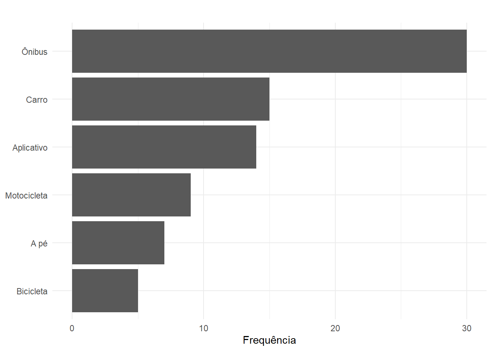
4 Distribuições de frequências e representações gráficas
Depois de compreender a estrutura de um banco de dados e verificar sua qualidade, uma das primeiras tarefas da Análise Exploratória de Dados é descrever como os valores de uma variável se distribuem.
Duas ferramentas aparecem naturalmente nesse processo:
- as tabelas de frequências, que organizam contagens, proporções e percentuais de forma precisa;
- as representações gráficas, que tornam mais visíveis concentração, predominância, dispersão, forma e possíveis características incomuns dos dados.
Essas ferramentas não devem ser estudadas como assuntos independentes. Em geral, a tabela organiza numericamente a distribuição e o gráfico oferece uma leitura visual da mesma informação. Ao longo deste capítulo, sempre que possível, a construção conceitual será seguida de sua interpretação e de um Laboratório no R.
Objetivos do capítulo
Ao final deste capítulo, espera-se que você seja capaz de:
- construir e interpretar distribuições de frequências para variáveis qualitativas e quantitativas;
- distinguir frequência absoluta, relativa, percentual e acumulada;
- reconhecer quando uma frequência acumulada possui significado;
- organizar variáveis quantitativas contínuas em classes;
- calcular amplitude total, limites, amplitude e ponto médio das classes;
- utilizar e interpretar as regras da raiz quadrada, de Sturges, de Scott e de Freedman–Diaconis;
- relacionar tabelas de frequências às representações gráficas correspondentes;
- distinguir gráfico de barras, Pareto, setores, pontos, histograma, polígono de frequências, ogiva, ramo e folhas e curva de densidade;
- reproduzir tabelas e gráficos no R de forma coerente com os conceitos estudados;
- interpretar resultados estatísticos sem se limitar a descrever números ou comandos.
4.1 Variáveis qualitativas e quantitativas discretas
Quando uma variável possui um conjunto relativamente pequeno de categorias ou valores distintos, podemos apresentar diretamente cada categoria ou valor observado e sua frequência. Isso ocorre naturalmente com variáveis qualitativas e com muitas variáveis quantitativas discretas.
4.1.1 Conceitos fundamentais de frequência e tabelas
Dos dados individuais para uma distribuição
Considere o número de faltas de 20 estudantes em determinada disciplina:
\[0,\ 2,\ 1,\ 3,\ 2,\ 0,\ 4,\ 1,\ 2,\ 2,\ 5,\ 0,\ 1,\ 3,\ 2,\ 4,\ 1,\ 2,\ 0,\ 3.\]
Esses são os dados brutos. Eles preservam todas as observações individualmente, mas a leitura direta não é a forma mais eficiente de responder a perguntas como:
- qual número de faltas ocorreu com maior frequência?
- quantos estudantes não tiveram faltas?
- qual proporção apresentou exatamente duas faltas?
- quantos tiveram no máximo duas faltas?
- quantos tiveram pelo menos três faltas?
Uma primeira organização consiste em construir o rol, isto é, ordenar os valores:
\[0,\ 0,\ 0,\ 0,\]
\[ 1,\ 1,\ 1,\ 1, \]
\[2,\ 2,\ 2,\ 2,\ 2,\ 2, \]
\[3,\ 3,\ 3,\]
\[4,\ 4,\]
\[5.\]
O rol facilita a percepção das repetições, mas ainda exige que contemplemos cada observação. A distribuição de frequências dá um passo além: reúne valores iguais e informa quantas vezes cada um ocorre.
| Número de faltas (\(x_i\)) | Número de estudantes (\(f_i\)) |
|---|---|
| 0 | 4 |
| 1 | 4 |
| 2 | 6 |
| 3 | 3 |
| 4 | 2 |
| 5 | 1 |
| Total | 20 |
A Tabela 4.1 mostra que duas faltas foi o valor mais frequente, observado em 6 dos 20 estudantes. Também se verifica que 4 estudantes não tiveram faltas e que os números mais elevados de faltas ocorreram com menor frequência. A tabela permite, portanto, identificar rapidamente a concentração das observações nos menores valores da variável.
Vinte observações individuais foram resumidas em seis linhas. A tabela não preserva a identidade nem a ordem original dos estudantes, mas conserva a informação necessária para compreender a distribuição da variável.
Resumir implica escolher o que preservar
Uma tabela de frequências preserva os valores observados e suas contagens, mas não preserva a posição original de cada unidade no banco. Isso não é um defeito: é justamente o propósito do resumo estatístico. O importante é compreender qual informação foi condensada.
Usaremos a seguinte notação:
- \(n\): número total de observações;
- \(k\): número de categorias ou valores distintos apresentados na tabela;
- \(x_i\): categoria ou valor correspondente à linha \(i\);
- \(f_i\): frequência absoluta da categoria ou valor \(i\).
No exemplo,
\[n=20, \qquad k=6.\]
Para \(x_i=2\),
\[f_i=6.\]
Logo, seis estudantes apresentaram exatamente duas faltas. A soma das frequências absolutas deve reproduzir o total de observações:
\[\sum_{i=1}^{k}f_i=n.\]
Neste caso,
\[4+4+6+3+2+1=20.\]
Essa é uma verificação básica de consistência da tabela.
Frequência absoluta, relativa, percentual e acumulada
A frequência absoluta, representada por \(f_i\), informa quantas observações pertencem a uma categoria ou assumem determinado valor.
Para duas faltas:
\[f(2)=6.\]
A frequência absoluta responde à pergunta:
quantas observações?
Entretanto, a contagem isolada depende do tamanho do conjunto. Se uma turma possui 20 estudantes e outra possui 100, uma frequência igual a 10 representa situações bastante diferentes. Para comparar, usamos a frequência relativa \((f_{r_i})\) que expressa a frequência como uma proporção do total:
\[f_{r_i}=\frac{f_i}{n}.\]
Para duas faltas:
\[f_r(2)=\frac{6}{20}=0{,}30.\]
Portanto, a frequência relativa é 0,30.
A frequência percentual \((f_{r_i}\%)\) apresenta a mesma informação em porcentagem:
\[f_{r_i}{\%}=100\times f_{r_i}.\]
Assim,
\[f_{r_i}(2){\%}=30\%.\]
Podemos então dizer:
6 estudantes tiveram exatamente 2 faltas, correspondendo a 30% dos 20 estudantes observados.
A tabela passa a ser:
| \(x_i\) | \(f_i\) | \(f_{r_i}\) | \(f_{\%i}\) |
|---|---|---|---|
| 0 | 4 | 0,20 | 20% |
| 1 | 4 | 0,20 | 20% |
| 2 | 6 | 0,30 | 30% |
| 3 | 3 | 0,15 | 15% |
| 4 | 2 | 0,10 | 10% |
| 5 | 1 | 0,05 | 5% |
| Total | 20 | 1,00 | 100% |
Duas verificações são esperadas:
\[\sum_{i=1}^{K}f_{r_i}=1\]
e
\[\sum_{i=1}^{K}f_{r_i}{\%}=100\%.\]
Em tabelas publicadas, a soma dos percentuais pode resultar em 99,9% ou 100,1% devido ao arredondamento. Isso não significa necessariamente que a tabela esteja errada.
Quando as categorias ou valores possuem uma ordem com significado, podemos calcular frequências acumuladas.
A frequência absoluta acumulada \((F_i)\) é
\[F_i=\sum_{j=1}^{i}f_j.\]
Para a variável faltas:
\[F(0)=4.\] \[F(1)=4+4=8.\] \[F(2)=4+4+6=14.\]
A tabela completa é:
| \(x_i\) | \(f_i\) | \(f_{r_i}\) | \(f_{\%i}\) | \(F_i\) | \(F_{r_i}\) | \(F_{\%i}\) |
|---|---|---|---|---|---|---|
| 0 | 4 | 0,20 | 20% | 4 | 0,20 | 20% |
| 1 | 4 | 0,20 | 20% | 8 | 0,40 | 40% |
| 2 | 6 | 0,30 | 30% | 14 | 0,70 | 70% |
| 3 | 3 | 0,15 | 15% | 17 | 0,85 | 85% |
| 4 | 2 | 0,10 | 10% | 19 | 0,95 | 95% |
| 5 | 1 | 0,05 | 5% | 20 | 1,00 | 100% |
| Total | 20 | 1,00 | 100% | - | - | - |
Agora podemos interpretar: \[F(2) = 14\]
Isso significa:
14 dos 20 estudantes tiveram no máximo duas faltas.
A frequência relativa acumulada (\(F_{r_i}\)) correspondente é: \[F_r(2) = 0,70\]
Portanto:
70% dos estudantes tiveram no máximo duas faltas.
Observe que uma frequência acumulada não responde a “quantos tiveram exatamente 2”, mas a “quantos tiveram até 2”.
Exatamente, no máximo e pelo menos
Exatamente 2 → utilize \(f(2)\).
No máximo 2 → inclua \(0,1,2\); utilize a frequência acumulada \(F(2)\).
Pelo menos 2 → inclua \(2,3,4,5,\ldots\); some as frequências a partir de 2 ou subtraia do total as frequências abaixo de 2.
Por exemplo,
\[\text{pelo menos 3 faltas}=3+2+1=6,\]
portanto,
\[\frac{6}{20}=0{,}30=30\%.\]
4.1.2 Variável qualitativa nominal
Uma distribuição de frequências também pode ser construída para variáveis qualitativas. Considere o meio de transporte utilizado por 80 estudantes para chegar à universidade:
| Meio de transporte | \(f_i\) | \(f_{r_i}\) | Percentual |
|---|---|---|---|
| Ônibus | 30 | 0,3750 | 37,5% |
| Carro | 15 | 0,1880 | 18,8% |
| Aplicativo/táxi | 14 | 0,1750 | 17,5% |
| Motocicleta | 9 | 0,1120 | 11,2% |
| A pé | 7 | 0,0875 | 8,75% |
| Bicicleta | 5 | 0,0625 | 6,25% |
| Total | 80 | 1,000 | 100,0% |
A Tabela 4.2 evidencia uma concentração importante nas três categorias mais frequentes: ônibus, carro e aplicativo/táxi, que juntas reúnem 73,75% dos estudantes. Isso mostra que quase três quartos do grupo utilizam um desses três meios para chegar à universidade.
A variável meio de transporte é qualitativa nominal: suas categorias não possuem ordem natural. Podemos interpretar:
O ônibus foi o meio de transporte mais frequente, utilizado por 30 dos 80 estudantes, ou 37,5% do grupo.
Não faz sentido calcular uma frequência acumulada na ordem Ônibus, Carro, Motocicleta, etc., porque a ordem das categorias é apenas uma decisão de apresentação.
Para categorias nominais, podemos organizar a tabela em ordem:
- alfabética;
- definida pelo instrumento de coleta;
- de interesse substantivo;
- decrescente de frequência.
Ordenar as categorias pela frequência não transforma a variável em ordinal.
Gráfico de barras
O gráfico de barras é uma das representações mais úteis para variáveis qualitativas. Cada barra representa uma categoria, e sua altura representa uma frequência absoluta, relativa ou percentual.
As barras são separadas porque representam categorias distintas. Para variáveis nominais, a ordem pode ser escolhida de acordo com o objetivo da apresentação.
A tabela anterior pode ser visualizada esquematicamente como:
A Figura 4.1 evidencia o predomínio do ônibus como meio de transporte mais utilizado pelos estudantes. Também chama atenção a proximidade entre as frequências de carro e aplicativo, enquanto bicicleta aparece como a alternativa menos frequente.
O gráfico facilita a percepção imediata da categoria predominante; a tabela, por sua vez, preserva as contagens e percentuais exatos.
No gráfico de barras:
- as categorias aparecem em um eixo;
- as frequências aparecem no outro;
- as barras são separadas, pois cada uma representa uma categoria distinta.
Gráfico de Pareto
O gráfico de Pareto é um gráfico de barras no qual as categorias aparecem em ordem decrescente de frequência. Costuma-se acrescentar uma linha representando o percentual acumulado.
Para o exemplo:
| Meio de transporte | \(f_i\) | \(F_{r_i}\) | Percentual acumulado |
|---|---|---|---|
| Ônibus | 30 | 0,3750 | 37,50% |
| Carro | 15 | 0,5630 | 56,30% |
| Aplicativo/táxi | 14 | 0,7380 | 73,80% |
| Motocicleta | 9 | 0,8500 | 85,00% |
| A pé | 7 | 0,9375 | 93,75% |
| Bicicleta | 5 | 1,0000 | 1,00% |
| Total | 80 | - | - |
Observe que a acumulação do Pareto segue a ordem decrescente de frequência, e não uma ordem natural da variável. Portanto, sua interpretação é diferente da frequência acumulada de uma variável ordinal ou quantitativa.
A Figura 4.2 mostra que o ônibus é o meio de transporte mais frequente, utilizado por 30 dos 80 estudantes, correspondendo a 37,5% do total. Quando acrescentamos os estudantes que utilizam carro, o percentual acumulado atinge 56,25%; com a inclusão de aplicativo, chega a 73,75%.
A linha de percentual acumulado mostra ainda que as quatro categorias mais frequentes — ônibus, carro, aplicativo e motocicleta — reúnem 85% dos estudantes, ultrapassando a referência de 80% indicada pela linha tracejada. Assim, embora existam seis meios de transporte registrados, a maior parte dos estudantes concentra-se nessas quatro categorias.
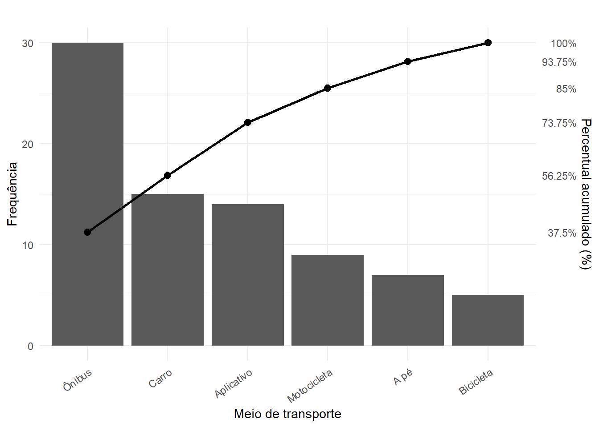
Gráfico de setores
O gráfico de setores representa cada categoria como uma parcela de um círculo de \(360^\circ\). O tamanho de cada setor é proporcional à frequência relativa da categoria.
Ele pode ser útil quando há poucas categorias e o objetivo é enfatizar a composição de um total. Entretanto, a comparação visual entre ângulos e áreas costuma ser menos precisa do que a comparação entre comprimentos de barras. Por isso, para muitas categorias ou quando a comparação exata é importante, o gráfico de barras geralmente é mais eficiente.
Para construir o gráfico manualmente, precisamos transformar a frequência de cada categoria em um ângulo central.
Se uma categoria possui frequência absoluta \(f_i\) em um conjunto com \(n\) observações, sua frequência relativa é
\[f_{r_i}=\frac{f_i}{n}.\]
Como o círculo completo possui \(360^\circ\), o ângulo correspondente à categoria é
\[\theta_i = f_{r_i}\times360^\circ.\]
Portanto,
\[\theta_i = \frac{f_i}{n}\times360^\circ.\]
Se a informação estiver apresentada em percentual, podemos utilizar
\[\theta_i = \frac{p_i}{100}\times360^\circ,\]
ou, de maneira equivalente,
\[\theta_i=3{,}6\,p_i,\]
em que \(p_i\) representa o percentual da categoria.
Para o exemplo:
| Meio de transporte | \(f_i\) | \(f_{r_i}\) | Percentual | Ângulo |
|---|---|---|---|---|
| Ônibus | 30 | 0,3750 | 37,50% | \(135^\circ\) |
| Carro | 15 | 0,1875 | 18,75% | \(67{,}5^\circ\) |
| Aplicativo | 14 | 0,1750 | 17,50% | \(63^\circ\) |
| Motocicleta | 9 | 0,1125 | 11,25% | \(40{,}5^\circ\) |
| A pé | 7 | 0,0875 | 8,75% | \(31{,}5^\circ\) |
| Bicicleta | 5 | 0,0625 | 6,25% | \(22{,}5^\circ\) |
| Total | 80 | 1,0000 | 100,00% | \(360^\circ\) |
Por exemplo, para a categoria Ônibus:
\[\theta_{\text{Ônibus}} = \frac{30}{80}\times360^\circ = 135^\circ.\]
Para Carro:
\[\theta_{\text{Carro}} = \frac{15}{80}\times360^\circ = 67{,}5^\circ.\]
E, para Aplicativo:
\[\theta_{\text{Aplicativo}} = \frac{14}{80}\times360^\circ = 63^\circ.\]
Os demais setores são obtidos da mesma maneira.
Como esboçar o gráfico de setores
- Desenhe um círculo e marque o seu centro.
- Trace um raio para servir como ponto inicial.
- Com um transferidor, marque sucessivamente os ângulos:
\[135^\circ,\quad 67{,}5^\circ,\quad 63^\circ,\quad 40{,}5^\circ,\quad 31{,}5^\circ,\quad 22{,}5^\circ.\]
- Identifique cada setor com sua categoria.
- Se desejar, acrescente também os percentuais correspondentes.
Ao final, os setores devem completar todo o círculo.
\[135 + 67{,}5 + 63 + 40{,}5 + 31{,}5 + 22{,}5 = 360^\circ.\]
Uma relação útil
Como há 80 estudantes,
\[\frac{360^\circ}{80}=4{,}5^\circ.\]
Assim, cada estudante representa \(4{,}5^\circ\) do círculo.
Por exemplo, 30 estudantes correspondem a
\[30\times4{,}5^\circ=135^\circ.\]
Essa relação torna a construção manual particularmente simples neste exemplo.
A Figura 4.3 evidencia a predominância do ônibus, utilizado por 37,5% dos estudantes. Somados, ônibus, carro e aplicativo representam 73,75% dos 80 estudantes, enquanto bicicleta corresponde à menor parcela, com 6,25%.
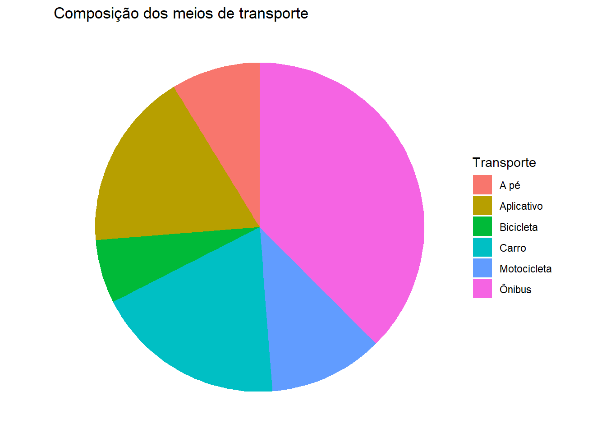
Tabela e gráfico cumprem funções complementares
A tabela permite localizar frequências com precisão. O gráfico permite perceber rapidamente diferenças de magnitude e padrões gerais. Uma boa análise pode utilizar ambos, evitando repetir informação sem necessidade.
Da teoria à prática
A tabela e os gráficos acima foram construídos para compreender a lógica estatística. No Laboratório no R, reproduziremos as mesmas ideias computacionalmente. O objetivo do código é automatizar procedimentos já compreendidos, não substituir sua interpretação.
Laboratório no R
Nesta prática utilizaremos um único banco para acompanhar diferentes tipos de variáveis ao longo do capítulo. O arquivo contém 80 estudantes e inclui variáveis qualitativas, quantitativas discretas e quantitativas contínuas.
Código
library(tidyverse)Código
dados <- read_csv(
"dados/aula7_8_estudantes.csv",
show_col_types = FALSE
)
glimpse(dados)Rows: 80
Columns: 8
$ id_estudante <chr> "E001", "E002", "E003", "E004", "E005", "E006",…
$ curso <chr> "Química", "Física", "Física", "Física", "Físic…
$ meio_transporte <chr> "Ônibus", "Aplicativo", "Carro", "Aplicativo", …
$ satisfacao <chr> "Alta", "Muito alta", "Alta", "Alta", "Alta", "…
$ idade_anos <dbl> 25, 21, 26, 23, 19, 19, 22, 23, 21, 17, 17, 19,…
$ faltas <dbl> 1, 1, 2, 2, 5, 4, 2, 3, 4, 1, 2, 5, 3, 1, 1, 3,…
$ tempo_deslocamento_min <dbl> 96.5, 37.7, 45.1, 51.0, 112.0, 14.0, 35.7, 27.9…
$ altura_m <dbl> 1.75, 1.71, 1.63, 1.59, 1.61, 1.64, 1.65, 1.69,…Antes de resumir qualquer variável, verifique seus valores e possíveis ausências:
Código
dados |>
summarise(
n = n(),
ausentes_curso = sum(is.na(curso)),
ausentes_transporte = sum(is.na(meio_transporte)),
ausentes_satisfacao = sum(is.na(satisfacao)),
ausentes_faltas = sum(is.na(faltas))
)# A tibble: 1 × 5
n ausentes_curso ausentes_transporte ausentes_satisfacao ausentes_faltas
<int> <int> <int> <int> <int>
1 80 0 0 0 0Comecemos por meio_transporte.
Código
tab_transporte <- dados |>
count(meio_transporte, name = "fi") |>
mutate(
fr = fi / sum(fi),
percentual = 100 * fr
)
tab_transporte# A tibble: 6 × 4
meio_transporte fi fr percentual
<chr> <int> <dbl> <dbl>
1 A pé 7 0.0875 8.75
2 Aplicativo 14 0.175 17.5
3 Bicicleta 5 0.0625 6.25
4 Carro 15 0.188 18.8
5 Motocicleta 9 0.112 11.2
6 Ônibus 30 0.375 37.5 Uma tabela pronta para apresentação pode ser produzida por:
Código
tab_transporte |>
mutate(
fr = round(fr, 3),
percentual = round(percentual, 1)
) |>
knitr::kable(
col.names = c(
"Meio de transporte",
"fi",
"fr",
"Percentual (%)"
)
)| Meio de transporte | fi | fr | Percentual (%) |
|---|---|---|---|
| A pé | 7 | 0.088 | 8.8 |
| Aplicativo | 14 | 0.175 | 17.5 |
| Bicicleta | 5 | 0.062 | 6.2 |
| Carro | 15 | 0.188 | 18.8 |
| Motocicleta | 9 | 0.112 | 11.2 |
| Ônibus | 30 | 0.375 | 37.5 |
O gráfico de barras usa exatamente as frequências que acabamos de calcular:
Código
tab_transporte |>
ggplot(
aes(
x = reorder(meio_transporte, fi),
y = fi
)
) +
geom_col() +
coord_flip() +
labs(
title = "Meio de transporte dos estudantes",
x = NULL,
y = "Frequência"
) +
theme_minimal()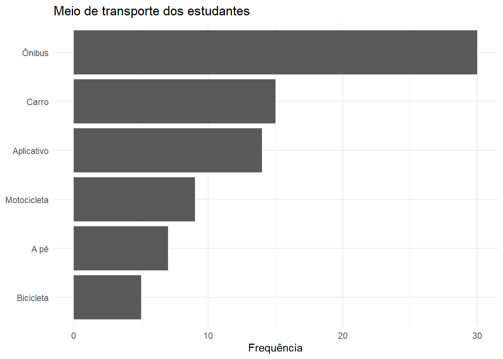
Para alterar a cor das barras, use o argumento fill dentro de geom_col():
fillaltera o preenchimento das barras.coloraltera apenas a borda:
geom_col(fill = "#2A9D8F", color = "#1D3557")Para dar uma cor diferente a cada meio de transporte, coloque fill dentro de aes():
geom_col(aes(fill = meio_transporte)) + guides(fill = "none")e
guides(fill = "none") remove a legenda das cores. Se quiser mantê-la, basta retirar essa linha ou deixar explícito que ela deve aparecer assim, por exemplo, guides(fill = guide_legend(title = "Transporte")). Assim, cada barra terá uma cor e a legenda aparecerá com o título Transporte.
Barras com percentuais
Código
tab_transporte |>
mutate(
fr = round(fr, 3),
percentual = round(percentual, 1)
) |>
knitr::kable(
col.names = c(
"Meio de transporte",
"fi",
"fr",
"Percentual (%)"
)
)| Meio de transporte | fi | fr | Percentual (%) |
|---|---|---|---|
| A pé | 7 | 0.088 | 8.8 |
| Aplicativo | 14 | 0.175 | 17.5 |
| Bicicleta | 5 | 0.062 | 6.2 |
| Carro | 15 | 0.188 | 18.8 |
| Motocicleta | 9 | 0.112 | 11.2 |
| Ônibus | 30 | 0.375 | 37.5 |
Código
tab_transporte |>
ggplot(
aes(
x = reorder(meio_transporte, percentual),
y = percentual
)
) +
geom_col() +
coord_flip() +
labs(
title = "Distribuição percentual do meio de transporte",
x = "Meio de transporte",
y = "Percentual (%)"
) +
theme_minimal()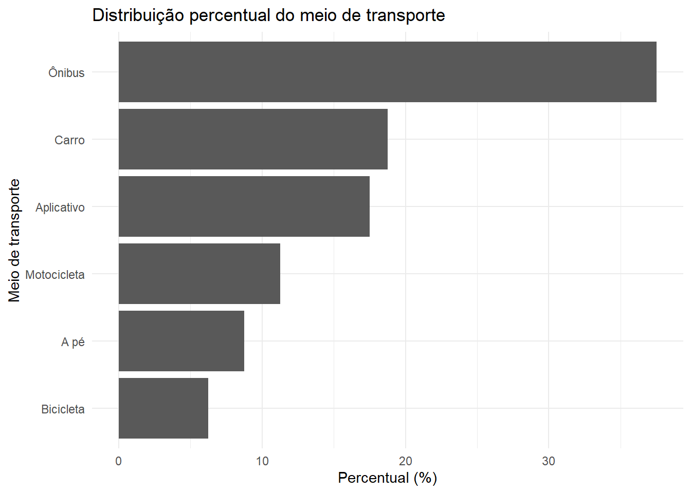
Frequência ou percentual?
Se todos os gráficos se referem ao mesmo conjunto de 80 estudantes, frequência e percentual transmitem a mesma ordenação.
Percentuais tornam-se especialmente úteis quando desejamos comunicar composição ou comparar grupos de tamanhos diferentes.
Para construir um Pareto, ordenamos as categorias da maior para a menor frequência e calculamos o percentual acumulado nessa ordem:
Código
tab_pareto <- tab_transporte |>
arrange(desc(fi)) |>
mutate(
percentual_acumulado = cumsum(percentual),
meio_transporte = factor(
meio_transporte,
levels = meio_transporte
)
)
tab_pareto# A tibble: 6 × 5
meio_transporte fi fr percentual percentual_acumulado
<fct> <int> <dbl> <dbl> <dbl>
1 Ônibus 30 0.375 37.5 37.5
2 Carro 15 0.188 18.8 56.2
3 Aplicativo 14 0.175 17.5 73.8
4 Motocicleta 9 0.112 11.2 85
5 A pé 7 0.0875 8.75 93.8
6 Bicicleta 5 0.0625 6.25 100 Como frequência absoluta e percentual estão em escalas diferentes, precisamos fazer uma transformação para que ambos possam aparecer no mesmo gráfico.
Código
fator_escala <- max(tab_pareto$fi) / 100O gráfico de barras correspondente é:
Código
tab_pareto |>
ggplot(
aes(x = meio_transporte)
) +
geom_col(
aes(y = fi)
) +
geom_line(
aes(
y = percentual_acumulado * fator_escala,
group = 1
),
linewidth = 1
) +
geom_point(
aes(
y = percentual_acumulado * fator_escala
),
size = 2.5
) +
scale_y_continuous(
name = "Frequência",
sec.axis = sec_axis(
~ . / fator_escala,
name = "Percentual acumulado (%)",
breaks = tab_pareto$percentual_acumulado,
labels = paste0(
tab_pareto$percentual_acumulado,
"%"
)
)
) +
labs(
title = "Gráfico de Pareto — meio de transporte",
x = "Meio de transporte"
) +
theme_minimal() +
theme(
axis.text.x = element_text(
angle = 35,
hjust = 1
)
)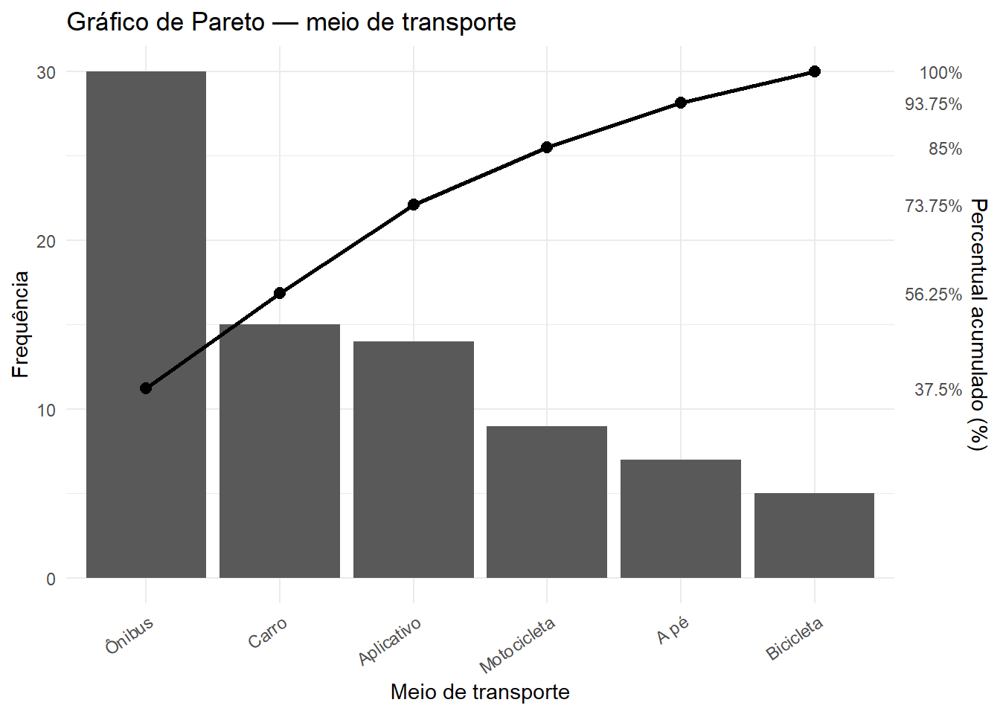
Em um relatório mais elaborado, a linha de percentual acumulado pode ser adicionada com uma segunda escala. Para esta etapa introdutória, é mais importante compreender como a ordenação e o acumulado são produzidos do que acrescentar complexidade gráfica.
Um gráfico de setores pode ser construído a partir da mesma tabela:
Código
tab_transporte |>
ggplot(
aes(x = "", y = fi, fill = meio_transporte)
) +
geom_col(width = 1) +
coord_polar(theta = "y") +
labs(
title = "Composição dos meios de transporte",
x = NULL,
y = NULL,
fill = "Transporte"
) +
theme_void()
Compare os dois gráficos. Para identificar rapidamente qual categoria é maior e comparar magnitudes, o gráfico de barras tende a ser mais eficiente. O gráfico de setores enfatiza a ideia de composição do total.
4.1.3 Variável qualitativa ordinal
Considere agora o nível de satisfação de 40 participantes:
| Satisfação | \(f_i\) | \(f_{r_i}\) | Percentual |
|---|---|---|---|
| Muito insatisfeito | 3 | 0,075 | 7,5% |
| Insatisfeito | 5 | 0,125 | 12,5% |
| Indiferente | 8 | 0,200 | 20,0% |
| Satisfeito | 16 | 0,400 | 40,0% |
| Muito satisfeito | 8 | 0,200 | 20,0% |
| Total | 40 | 1,000 | 100,0% |
Agora existe uma ordem natural:
\[\text{Muito insatisfeito} < \text{Insatisfeito} < \text{Indiferente} < \text{Satisfeito} < \text{Muito satisfeito}.\]
Por isso, a frequência acumulada possui interpretação:
| Satisfação | \(f_i\) | \(F_i\) | \(F_{\%i}\) |
|---|---|---|---|
| Muito insatisfeito | 3 | 3 | 7,5% |
| Insatisfeito | 5 | 8 | 20,0% |
| Indiferente | 8 | 16 | 40,0% |
| Satisfeito | 16 | 32 | 80,0% |
| Muito satisfeito | 8 | 40 | 100,0% |
Podemos dizer:
40% dos participantes declararam satisfação no máximo até o nível “indiferente”.
ou, de maneira mais natural:
40% dos participantes declararam-se muito insatisfeitos, insatisfeitos ou indiferentes.
No gráfico de barras de uma variável ordinal, a ordem natural das categorias deve ser preservada. Ordenar simplesmente da maior para a menor frequência pode destruir parte da informação contida na variável.
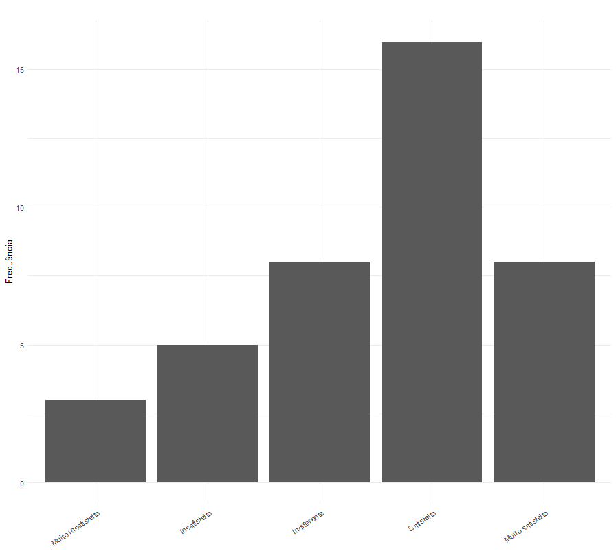
Valores ausentes e denominador
Suponha que 42 pessoas tenham sido entrevistadas, mas duas não tenham respondido à pergunta de satisfação. Podemos informar:
Total de participantes: 42
Respostas válidas: 40
Não informado: 2Se os percentuais forem calculados entre as respostas válidas, o denominador é 40. Se forem calculados sobre todos os participantes, o denominador é 42. As duas opções respondem a perguntas diferentes.
Sempre saiba qual é o denominador
Um percentual não deve ser interpretado sem saber qual total foi utilizado em seu cálculo. Em relatórios, informe claramente se os percentuais se referem ao total de registros ou apenas às respostas válidas.
Da teoria à prática
A tabela e os gráficos acima foram construídos para compreender a lógica estatística. No Laboratório no R, reproduziremos as mesmas ideias computacionalmente. O objetivo do código é automatizar procedimentos já compreendidos, não substituir sua interpretação.
Laboratório no R
A seguir, reproduzimos no R a organização da variável ordinal, preservando explicitamente a ordem das categorias.
Para reproduzir o gráfico da Seção 1.1.3, escrevemos a tabela no R
Código
tab_satisfacao <- tibble(
satisfacao = c(
"Muito insatisfeito",
"Insatisfeito",
"Indiferente",
"Satisfeito",
"Muito satisfeito"
),
fi = c(3, 5, 8, 16, 8),
Fi = c(3, 8, 16, 32, 40),
F_percentual = c(7.5, 20, 40, 80, 100)
) |>
mutate(
satisfacao = factor(
satisfacao,
levels = c(
"Muito insatisfeito",
"Insatisfeito",
"Indiferente",
"Satisfeito",
"Muito satisfeito"
),
ordered = TRUE
)
)E o gráfico de colunas,
Código
tab_satisfacao |>
ggplot(
aes(
x = satisfacao,
y = fi
)
) +
geom_col() +
labs(
title = "Nível de satisfação dos estudantes",
x = NULL,
y = "Frequência"
) +
theme_minimal() +
theme(
axis.text.x = element_text(
angle = 35,
hjust = 1
)
)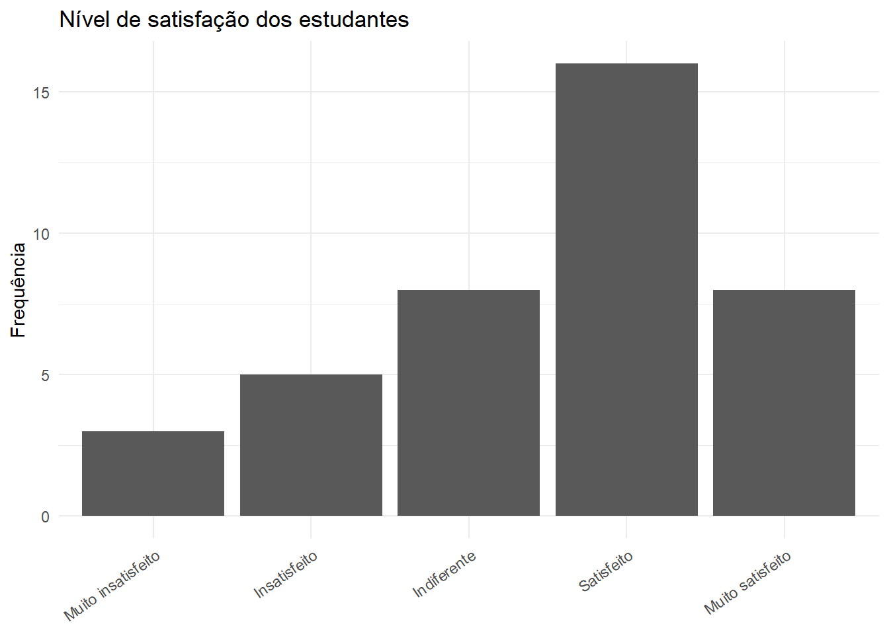
Caso queira mostrar a frequência sobre cada coluna:
Código
tab_satisfacao |>
ggplot(
aes(
x = satisfacao,
y = fi
)
) +
geom_col() +
geom_text(
aes(label = fi),
vjust = -0.4
) +
labs(
title = "Nível de satisfação dos estudantes",
x = NULL,
y = "Frequência"
) +
scale_y_continuous(
expand = expansion(mult = c(0, 0.12))
) +
theme_minimal() +
theme(
axis.text.x = element_text(
angle = 35,
hjust = 1
)
)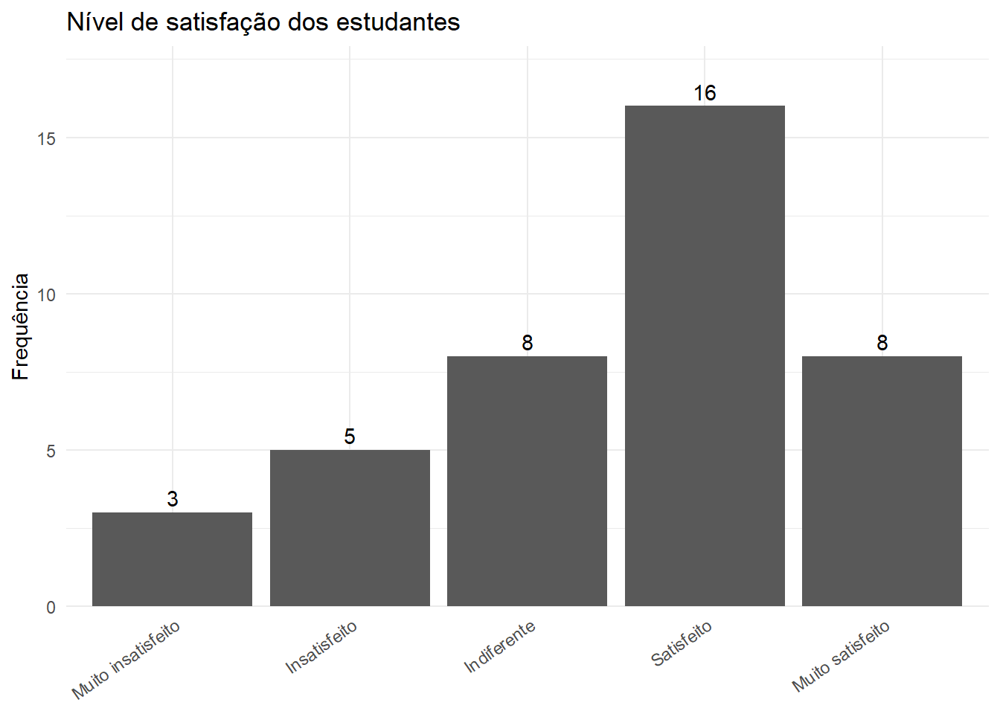
A seguir, construiremos o gráfico para a variável satisfacao do banco de dados estudantes. A variável deve ser explicitamente organizada como fator ordinal:
Código
dados <- dados |>
mutate(
satisfacao = factor(
satisfacao,
levels = c(
"Muito baixa",
"Baixa",
"Média",
"Alta",
"Muito alta"
),
ordered = TRUE
)
)
levels(dados$satisfacao)[1] "Muito baixa" "Baixa" "Média" "Alta" "Muito alta" Agora construímos a tabela:
Código
tab_satisfacao <- dados |>
filter(!is.na(satisfacao)) |>
count(satisfacao, name = "fi", .drop = FALSE) |>
mutate(
fr = fi / sum(fi),
percentual = 100 * fr,
Fi = cumsum(fi),
Fr = cumsum(fr)
)
tab_satisfacao# A tibble: 5 × 6
satisfacao fi fr percentual Fi Fr
<ord> <int> <dbl> <dbl> <int> <dbl>
1 Muito baixa 4 0.05 5 4 0.05
2 Baixa 9 0.112 11.2 13 0.162
3 Média 24 0.3 30 37 0.462
4 Alta 30 0.375 37.5 67 0.838
5 Muito alta 13 0.162 16.2 80 1 A ordem do fator é usada tanto na tabela acumulada quanto no gráfico:
Código
tab_satisfacao |>
ggplot(
aes(x = satisfacao, y = percentual)
) +
geom_col() +
labs(
title = "Nível de satisfação",
x = "Satisfação",
y = "Percentual (%)"
) +
theme_minimal()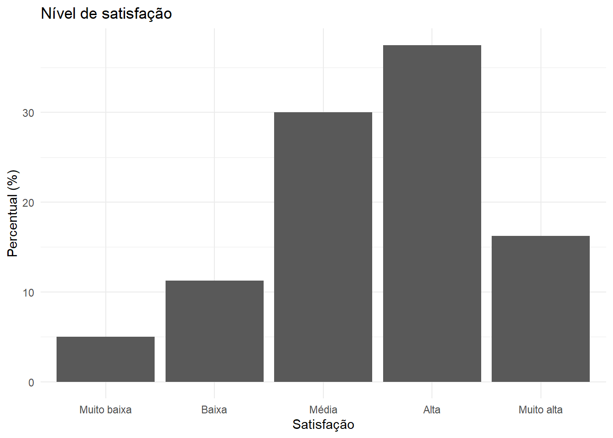
Ordenar esse gráfico da maior para a menor frequência destruiria a ordem substantiva da variável.
4.1.4 Variável quantitativa discreta
Considere um estudo com 25 empresas de porte médio. A variável \(X\) representa o número de empregados do setor de vendas com curso superior completo.
Os dados brutos são:
\[4,\ 1,\ 2,\ 5,\ 3,\ 1,\ 0,\ 2,\ 4,\ 3,\ 2,\ 3,\ 0,\ 1,\ 4,\ 3,\ 2,\ 3,\ 1,\ 2,\ 1,\ 2,\ 4,\ 3,\ 2.\]
A primeira pergunta é:
Quais valores foram observados?
Construindo o rol:
\[0,\ 0,\]
\[1,\ 1,\ 1,\ 1,\ 1,\]
\[2,\ 2,\ 2,\ 2,\ 2,\ 2,\ 2,\]
\[3,\ 3,\ 3,\ 3,\ 3,\ 3,\]
\[4,\ 4,\ 4,\ 4,\]
\[5.\]
Os valores observados são \(0,1,2,3,4,5\).
Contando cada valor:
| \(x_i\) | \(f_i\) |
|---|---|
| 0 | 2 |
| 1 | 5 |
| 2 | 7 |
| 3 | 6 |
| 4 | 4 |
| 5 | 1 |
| Total | 25 |
Agora calculamos:
\[f_{r_i}=\frac{f_i}{25}.\]
Para \(x=3\):
\[f_r(3)=\frac{6}{25}=0{,}24.\]
Portanto, 24% das empresas possuem exatamente 3 empregados com curso superior completo no setor considerado.
A distribuição completa é:
| \(x_i\) | \(f_i\) | \(f_{r_i}\) | \(f_{\%i}\) | \(F_i\) | \(F_{r_i}\) | \(F_{\%i}\) |
|---|---|---|---|---|---|---|
| 0 | 2 | 0,08 | 8% | 2 | 0,08 | 8% |
| 1 | 5 | 0,20 | 20% | 7 | 0,28 | 28% |
| 2 | 7 | 0,28 | 28% | 14 | 0,56 | 56% |
| 3 | 6 | 0,24 | 24% | 20 | 0,80 | 80% |
| 4 | 4 | 0,16 | 16% | 24 | 0,96 | 96% |
| 5 | 1 | 0,04 | 4% | 25 | 1,00 | 100% |
| Total | 25 | 1,00 | 100% |
Vamos interpretar algumas linhas.
Para \(x=0\):
2 empresas não possuem empregado com curso superior completo no setor considerado, correspondendo a 8% das empresas.
Para \(x=2\):
7 empresas possuem exatamente 2 empregados com curso superior completo, correspondendo a 28% das empresas.
Para a frequência acumulada em \(x=2\):
\[F(2)=14.\]
Para \(x=3\):
\[f_r(3)=\frac{6}{25}=0{,}24.\]
Portanto, 24% das empresas possuem exatamente três empregados com curso superior completo no setor considerado.
A frequência acumulada em \(x=2\) é:
\[F(2)=14,\] Logo:
14 das 25 empresas possuem no máximo 2 empregados com curso superior completo.
Em percentual:
\[F_{r_i}(2){\%}=56\%.\]
logo 56% das empresas possuem no máximo dois empregados com curso superior completo.
Para “pelo menos três” empregados:
\[f(3)+f(4)+f(5)=6+4+1=11,\]
portanto:
\[\frac{11}{25}=0{,}44=44\%.\]
Gráfico de barras para uma variável discreta
Uma variável quantitativa discreta também pode ser representada por barras. Nesse caso, cada barra corresponde a um valor numérico distinto e sua altura representa a frequência.
A ordem numérica deve ser preservada. Diferentemente das categorias nominais, não faria sentido reorganizar 0,1,2,3,4,5 em ordem decrescente de frequência se o objetivo é representar a distribuição da variável.
A seguir, construímos o gráfico de barras correspondente à distribuição de frequências. Como a variável é quantitativa discreta, cada valor observado é representado por uma barra separada, cuja altura corresponde à sua frequência absoluta.
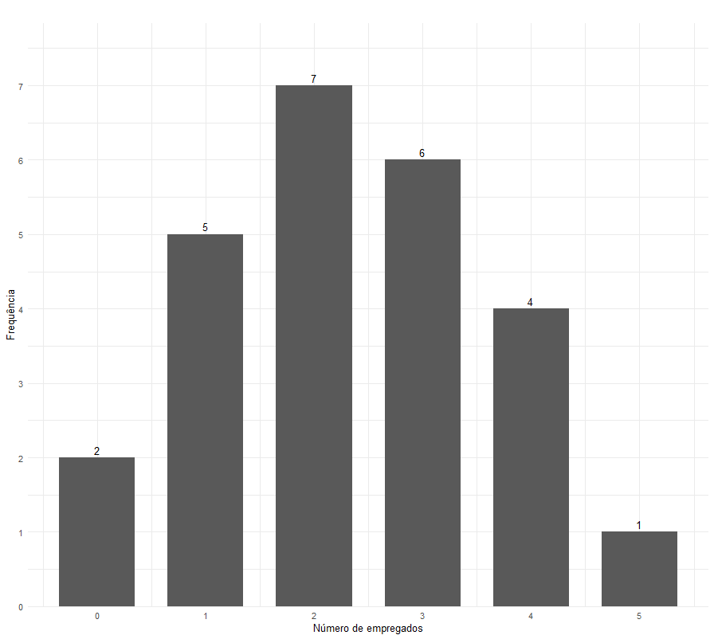
Neste caso, o gráfico deixa evidente que \(x_i=2\) é o valor mais frequente, com \(f_i=7\).
Gráfico de pontos
O gráfico de pontos (dot plot) representa cada observação por um ponto. Valores repetidos são empilhados. Para conjuntos pequenos ou moderados, ele preserva uma visão muito próxima dos dados individuais e evidencia repetições sem exigir uma tabela extensa.
No exemplo das 25 empresas, uma coluna de sete pontos sobre o valor 2 mostra imediatamente que esse é o valor mais frequente.
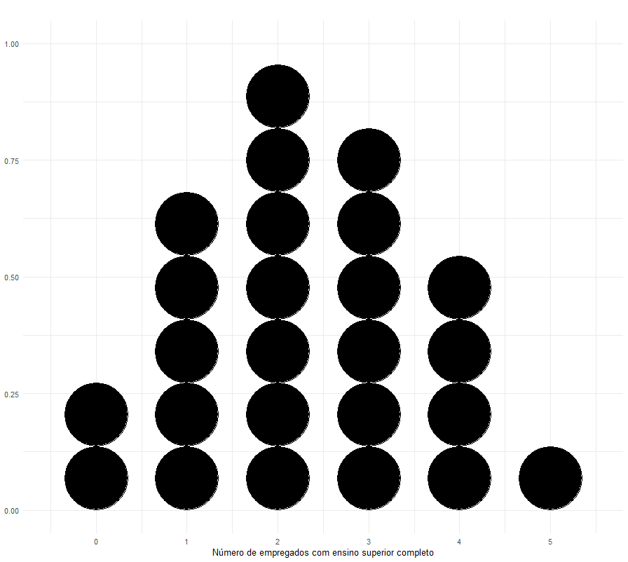
Da teoria à prática
A tabela e os gráficos acima foram construídos para compreender a lógica estatística. No Laboratório no R, reproduziremos as mesmas ideias computacionalmente. O objetivo do código é automatizar procedimentos já compreendidos, não substituir sua interpretação.
Laboratório no R
Para o exemplo da variável número de empregados com ensino superior completo. Primeiro, podemos representar a tabela no R:
Código
tab_discreta <- tibble(
xi = 0:5,
fi = c(2, 5, 7, 6, 4, 1)
)
tab_discreta# A tibble: 6 × 2
xi fi
<int> <dbl>
1 0 2
2 1 5
3 2 7
4 3 6
5 4 4
6 5 1E o gráfico, no mesmo estilo que estamos usando:
Código
tab_discreta |>
ggplot(
aes(
x = xi,
y = fi
)
) +
geom_col(
width = 0.7
) +
geom_text(
aes(label = fi),
vjust = -0.4
) +
scale_x_continuous(
breaks = 0:5
) +
scale_y_continuous(
breaks = 0:7,
expand = expansion(mult = c(0, 0.12))
) +
labs(
title = "Distribuição de frequências",
x = expression(x[i]),
y = "Frequência"
) +
theme_minimal()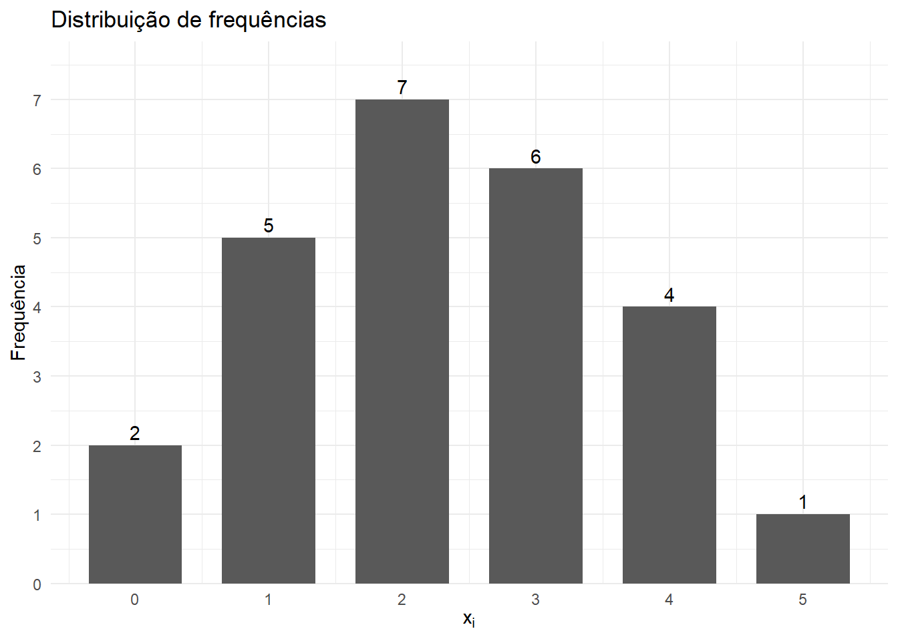
Agora reproduzimos computacionalmente a distribuição de frequências e as representações gráficas da variável quantitativa discreta `faltas`.
Código
tab_faltas <- dados |>
filter(!is.na(faltas)) |>
count(faltas, name = "fi") |>
arrange(faltas) |>
mutate(
fr = fi / sum(fi),
percentual = 100 * fr,
Fi = cumsum(fi),
Fr = cumsum(fr)
)
tab_faltas# A tibble: 7 × 6
faltas fi fr percentual Fi Fr
<dbl> <int> <dbl> <dbl> <int> <dbl>
1 0 4 0.05 5 4 0.05
2 1 24 0.3 30 28 0.35
3 2 24 0.3 30 52 0.65
4 3 19 0.238 23.8 71 0.888
5 4 5 0.0625 6.25 76 0.95
6 5 3 0.0375 3.75 79 0.987
7 6 1 0.0125 1.25 80 1 A ordem numérica aparece antes de cumsum() porque a frequência acumulada depende da ordem dos valores.
Podemos responder diretamente a algumas perguntas:
Código
# Exatamente 2 faltas
sum(dados$faltas == 2, na.rm = TRUE)[1] 24Código
# No máximo 2 faltas
sum(dados$faltas <= 2, na.rm = TRUE)[1] 52Código
# Pelo menos 3 faltas
sum(dados$faltas >= 3, na.rm = TRUE)[1] 28O gráfico de barras é:
Código
tab_faltas |>
ggplot(
aes(x = factor(faltas), y = fi)
) +
geom_col() +
labs(
title = "Distribuição do número de faltas",
x = "Número de faltas",
y = "Frequência"
) +
theme_minimal()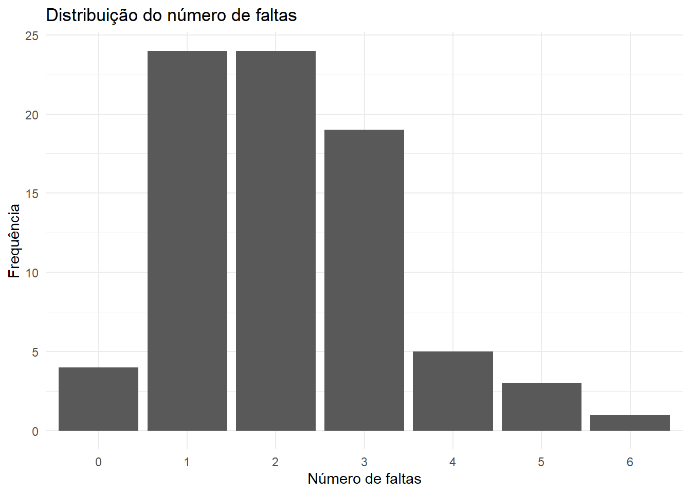
A seguir, construímos o gráfico de pontos correspondente à distribuição de frequências. Cada ponto representa uma empresa, e os pontos são empilhados quando duas ou mais empresas apresentam o mesmo número de empregados com ensino superior completo.
Código
tab_discreta <- tibble(
xi = 0:5,
fi = c(2, 5, 7, 6, 4, 1)
)O gráfico de pontos pode ser construído assim:
Código
tab_discreta |>
tidyr::uncount(fi) |>
ggplot(
aes(x = xi)
) +
geom_dotplot(
binwidth = 1,
stackdir = "up",
dotsize = 0.4
) +
scale_x_continuous(
breaks = 0:5
) +
labs(
title = "Gráfico de pontos — empregados com ensino superior completo",
x = "Número de empregados com ensino superior completo",
y = NULL
) +
theme_minimal()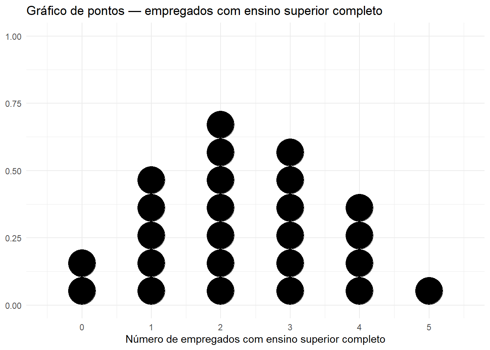
Para a variável faltas, o gráfico de pontos permite visualizar como as observações se distribuem entre os diferentes números de faltas, preservando uma representação próxima dos dados individuais:
Código
dados |>
ggplot(
aes(x = faltas)
) +
geom_dotplot(
binwidth = 1,
stackdir = "up",
dotsize = 0.15
) +
labs(
title = "Gráfico de pontos — número de faltas",
x = "Número de faltas",
y = NULL
) +
theme_minimal()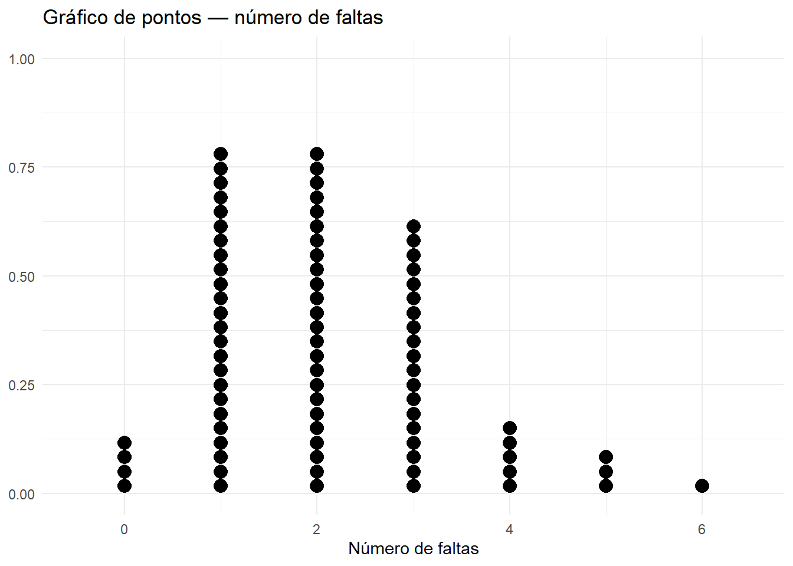
4.1.5 Apresentação e interpretação de tabelas
Uma tabela de frequências deve ser legível e responder ao problema em estudo.
Título. Deve informar claramente qual variável está sendo apresentada e, quando necessário, qual grupo foi analisado.
Tabela 1 — Frequências
prefira:
Tabela 1 — Distribuição do número de empregados com curso superior completo em 25 empresas de porte médio.
Categorias e valores. Use rótulos claros e preserve ordens substantivas quando existirem. Evite códigos como 1, 2, 3 quando o leitor precisa consultar outro lugar para descobrir seu significado.
Casas decimais. Utilize precisão suficiente para interpretar os resultados, sem excesso de dígitos.
ara uma turma de 20 estudantes, escrever:
30,000000%não acrescenta informação em relação a:
30,0%ou simplesmente:
30%Total. Em geral, inclua a linha de total para permitir a verificação da tabela.
Fonte. Quando os dados forem externos, informe sua origem.
Frequência acumulada. Use somente quando a ordem das categorias ou valores tiver significado.
Valores ausentes. Informe se foram excluídos do denominador ou apresentados separadamente.
Considere:
| Faltas | \(f_i\) | Percentual |
|---|---|---|
| 2 | 6 | 30% |
Uma interpretação fraca seria:
A frequência é 6.
Uma interpretação melhor seria:
Dos 20 estudantes observados, 6 apresentaram exatamente duas faltas, o que corresponde a 30% do grupo.
Ela informa:
- quem está sendo analisado;
- qual valor da variável;
- qual contagem;
- qual percentual;
- qual denominador implícito.
A tabela mostra; o texto interpreta
Não é necessário repetir em prosa cada número da tabela. Destaque os padrões mais relevantes: categoria predominante, concentração dos valores, proporções particularmente altas ou baixas e resultados diretamente relacionados à pergunta de interesse.
Laboratório no R
A etapa final consiste em preparar a tabela para apresentação e, quando necessário, exportá-la. Os cálculos devem ser mantidos com sua precisão original; o arredondamento fica para a exibição.
Arredonde apenas para apresentação. Preserve os valores completos nos objetos usados em cálculos.
Código
tab_faltas_apresentacao <- tab_faltas |>
mutate(
fr = round(fr, 3),
percentual = round(percentual, 1),
Fr = round(Fr, 3)
)
knitr::kable(
tab_faltas_apresentacao,
col.names = c(
"Faltas",
"fi",
"fr",
"Percentual (%)",
"Fi",
"Fr"
)
)| Faltas | fi | fr | Percentual (%) | Fi | Fr |
|---|---|---|---|---|---|
| 0 | 4 | 0.050 | 5.0 | 4 | 0.050 |
| 1 | 24 | 0.300 | 30.0 | 28 | 0.350 |
| 2 | 24 | 0.300 | 30.0 | 52 | 0.650 |
| 3 | 19 | 0.238 | 23.8 | 71 | 0.887 |
| 4 | 5 | 0.062 | 6.2 | 76 | 0.950 |
| 5 | 3 | 0.038 | 3.8 | 79 | 0.987 |
| 6 | 1 | 0.013 | 1.2 | 80 | 1.000 |
Para exportar:
Código
write_csv(
tab_faltas,
"dados/tabela_faltas.csv"
)A lógica pode ser reproduzida em uma planilha eletrônica. Se uma coluna contém os valores e outra lista as categorias ou valores distintos, funções do tipo CONT.SE, SOMA e fórmulas de divisão permitem calcular \(f_i\), \(f_{r_i}\) e percentuais. O princípio estatístico é o mesmo; muda apenas a ferramenta.
O computador calcula; você interpreta
count(), mutate() e cumsum() automatizam cálculos, mas não decidem se uma frequência acumulada faz sentido, qual denominador deve ser usado ou como o resultado deve ser interpretado. Essas decisões pertencem ao analista.
4.2 Variáveis quantitativas contínuas
Uma variável quantitativa contínua pode assumir, em princípio, qualquer valor dentro de um intervalo. Se apresentarmos uma linha para cada valor observado, uma tabela de frequências pode ficar longa e pouco informativa. Nesse contexto, é comum agrupar valores próximos em intervalos de classe.
4.2.1 Distribuições por classes e representações gráficas
Por que agrupar dados contínuos?
Considere alguns valores de tempo de deslocamento, em minutos:
\[37{,}9,\ 39{,}2,\ 42{,}6,\ 45{,}1,\ 47{,}8,\ 51{,}3,\ 54{,}7,\ 61{,}2,\ 68{,}5,\ 79{,}4.\]
Uma tabela contendo uma linha para cada valor teria pouca capacidade de síntese. Podemos agrupar valores próximos em classes e contar quantas observações pertencem a cada intervalo.
Agrupar é resumir
Ao agrupar dados contínuos em classes, ganhamos uma visão compacta da distribuição, mas perdemos parte da informação individual. Sabemos quantas observações existem em cada intervalo, mas não recuperamos os valores exatos apenas a partir da tabela agrupada.
Amplitude total
A amplitude total é a diferença entre o maior e o menor valor observado:
\[A=x_{\max}-x_{\min}.\]
Se o menor tempo for \(11{,}7\) minutos e o maior \(112{,}0\) minutos:
\[A=112{,}0-11{,}7=100{,}3.\]
Amplitude total não é amplitude de classe
A amplitude total descreve a extensão de todo o conjunto de dados. A amplitude de classe descreve a largura de um único intervalo da tabela.
Classes, limites e amplitude de classe
Uma classe é um intervalo utilizado para reunir observações próximas. Por exemplo:
\[[10;25).\]
Essa notação significa:
\[10\leq x<25.\]
O limite inferior está incluído e o limite superior não está. Assim, 10 pertence à classe \([10;25)\), enquanto 25 pertence à classe seguinte.
A amplitude ou largura da classe é:
\[h=L_s-L_i,\]
em que \(L_i\) e \(L_s\) representam os limites inferior e superior.
Para \([10;25)\):
\[h=25-10=15.\]
Classes bem construídas devem evitar sobreposição, lacunas e ambiguidades.
Ponto médio da classe
O ponto médio é:
\[x_i=\frac{L_i+L_s}{2}.\]
Para \([10;25)\):
\[x_i=\frac{10+25}{2}=17{,}5.\]
O ponto médio representa a posição central do intervalo, mas não significa que todas as observações da classe sejam iguais a ele.
Quantas classes utilizar?
Não existe um único número correto de classes para todos os conjuntos de dados. Poucas classes podem esconder características importantes; classes demais podem produzir um resumo irregular e excessivamente sensível a pequenas flutuações.
As regras a seguir fornecem pontos de partida, e não respostas automáticas.
Regra da raiz quadrada
\[k\approx\sqrt{n}.\]
Para \(n=80\):
\[k\approx\sqrt{80}\approx8{,}94,\]
sugerindo cerca de 9 classes.
Regra de Sturges
A regra de Sturges pode ser escrita como:
\[k=1+\log_2(n),\]
ou, de forma equivalente,
\[k=1+3{,}322\log_{10}(n).\]
Para \(n=80\):
\[k\approx7{,}32.\]
Um arredondamento prático conduz a aproximadamente 8 classes.
Regra de Scott
Scott propôs uma regra para a largura de classe:
\[h_{\text{Scott}}=3{,}5\,s\,n^{-1/3},\]
em que \(s\) é o desvio-padrão amostral.
Para os tempos de deslocamento utilizados neste capítulo, \(s\approx21{,}57\):
\[h_{\text{Scott}}\approx17{,}52.\]
Como \(A\approx100{,}3\):
\[k\approx\frac{100{,}3}{17{,}52}\approx5{,}72,\]
ou cerca de 6 classes.
Regra de Freedman–Diaconis
A regra de Freedman–Diaconis utiliza a amplitude interquartil:
\[h_{\text{FD}}=2\,AIQ\,n^{-1/3},\]
com
\[AIQ=Q_3-Q_1.\]
Para os mesmos dados:
\[Q_1\approx24{,}675, \qquad Q_3\approx51{,}775,\]
portanto,
\[AIQ=27{,}1.\]
Logo,
\[h_{\text{FD}}\approx12{,}58,\]
que corresponde a aproximadamente 8 classes.
Como utiliza a amplitude interquartil, essa regra tende a ser menos sensível a valores extremos do que uma regra baseada no desvio-padrão.
Comparando as propostas
| Regra | Resultado aproximado |
|---|---|
| Raiz quadrada | 9 classes |
| Sturges | 8 classes |
| Scott | largura 17,52 → cerca de 6 classes |
| Freedman–Diaconis | largura 12,58 → cerca de 8 classes |
As regras não concordam perfeitamente — e isso é esperado.
As regras são referências, não leis
A decisão final deve considerar tamanho da amostra, distribuição dos dados, unidade de medida, objetivo da análise e clareza da representação. Pergunte menos “qual fórmula está certa?” e mais “qual organização revela a estrutura dos dados sem esconder padrões nem exagerar pequenas irregularidades?”.
Construindo uma tabela de frequências por classes: passo a passo
Utilizaremos o tempo de deslocamento até a universidade de 80 estudantes. A mesma tabela será reproduzida no R no laboratório deste capítulo.
Passo 1 — Identificar o número de observações e os extremos
Temos:
\[n=80,\]
\[x_{\min}=11{,}7, \qquad x_{\max}=112{,}0.\]
Passo 2 — Calcular a amplitude total
\[A=112{,}0-11{,}7=100{,}3.\]
Passo 3 — Escolher um número inicial de classes
As regras anteriores sugeriram algo entre aproximadamente 6 e 9 classes. Como ponto de partida, adotaremos \(k=8\).
Passo 4 — Obter uma largura inicial e ajustá-la
Uma largura inicial pode ser calculada por:
\[h\approx\frac{A}{k}.\]
Logo,
\[h\approx\frac{100{,}3}{8}=12{,}54.\]
Para obter limites simples e fáceis de interpretar, adotaremos uma largura conveniente de 15 minutos.
Ajustar a largura pode alterar o número final de classes
Escolher \(h=15\) em vez de \(12{,}54\) faz com que o número final de classes deixe de ser exatamente 8. Isso não é um erro. As regras forneceram uma referência inicial; a tabela final deve também ser legível e cobrir todos os valores.
Passo 5 — Definir os limites das classes
Escolhemos um limite inferior simples, abaixo do mínimo observado: 10 minutos. Com largura 15:
\[[10;25),\ [25;40),\ [40;55),\ [55;70),\]
\[[70;85),\ [85;100),\ [100;115).\]
Essas sete classes cobrem todos os valores observados, do mínimo \(11{,}7\) ao máximo \(112{,}0\).
Passo 6 — Calcular os pontos médios
| Classe | Ponto médio |
|---|---|
| \([10;25)\) | 17,5 |
| \([25;40)\) | 32,5 |
| \([40;55)\) | 47,5 |
| \([55;70)\) | 62,5 |
| \([70;85)\) | 77,5 |
| \([85;100)\) | 92,5 |
| \([100;115)\) | 107,5 |
Passo 7 — Contar as observações em cada classe
Percorremos os dados e registramos a classe de cada observação. As frequências absolutas obtidas são:
| Classe | \(f_i\) |
|---|---|
| \([10;25)\) | 21 |
| \([25;40)\) | 26 |
| \([40;55)\) | 16 |
| \([55;70)\) | 10 |
| \([70;85)\) | 3 |
| \([85;100)\) | 3 |
| \([100;115)\) | 1 |
| Total | 80 |
Passo 8 — Calcular frequências relativas e percentuais
Para cada classe:
\[f_{r_i}=\frac{f_i}{80}.\]
Para \([25;40)\):
\[f_{r_i}=\frac{26}{80}=0{,}325.\]
Portanto, 32,5% dos estudantes apresentam tempo de deslocamento entre 25 minutos, inclusive, e 40 minutos, exclusive.
Passo 9 — Calcular frequências acumuladas
Para a segunda classe:
\[F_i=21+26=47.\]
Isso significa que 47 estudantes apresentam tempo de deslocamento inferior a 40 minutos.
Passo 10 — Montar a tabela completa
| Tempo de deslocamento (min) | Ponto médio | \(f_i\) | \(f_{r_i}\) | Percentual | \(F_i\) | \(F_{r_i}\) |
|---|---|---|---|---|---|---|
| \([10;25)\) | 17,5 | 21 | 0,2625 | 26,25% | 21 | 0,2625 |
| \([25;40)\) | 32,5 | 26 | 0,3250 | 32,50% | 47 | 0,5875 |
| \([40;55)\) | 47,5 | 16 | 0,2000 | 20,00% | 63 | 0,7875 |
| \([55;70)\) | 62,5 | 10 | 0,1250 | 12,50% | 73 | 0,9125 |
| \([70;85)\) | 77,5 | 3 | 0,0375 | 3,75% | 76 | 0,9500 |
| \([85;100)\) | 92,5 | 3 | 0,0375 | 3,75% | 79 | 0,9875 |
| \([100;115)\) | 107,5 | 1 | 0,0125 | 1,25% | 80 | 1,0000 |
| Total | — | 80 | 1,0000 | 100% | — | — |
Passo 11 — Conferir a tabela
Uma tabela bem construída deve satisfazer:
\[\sum f_i=80,\]
\[\sum f_{r_i}=1,\]
\[F_{\text{última classe}}=80,\]
e
\[F_{r,\text{última classe}}=1.\]
Passo 12 — Interpretar, não apenas calcular
A classe mais frequente é \([25;40)\), com 26 estudantes, correspondendo a 32,5% da amostra.
A frequência acumulada até essa classe é 47, portanto:
47 dos 80 estudantes, ou 58,75%, apresentam tempo de deslocamento inferior a 40 minutos.
Observe a diferença:
26descreve somente a classe \([25;40)\);47descreve tudo o que foi acumulado desde a primeira classe até menos de 40 minutos.
Da tabela ao histograma
Depois de construir a tabela, a passagem para o histograma é natural: cada classe se torna um intervalo no eixo horizontal e sua frequência determina a representação vertical.
Considerando a distribuição do tempo de deslocamento dos 80 estudantes, o histograma correspondente é apresentado na Figura 4.4.
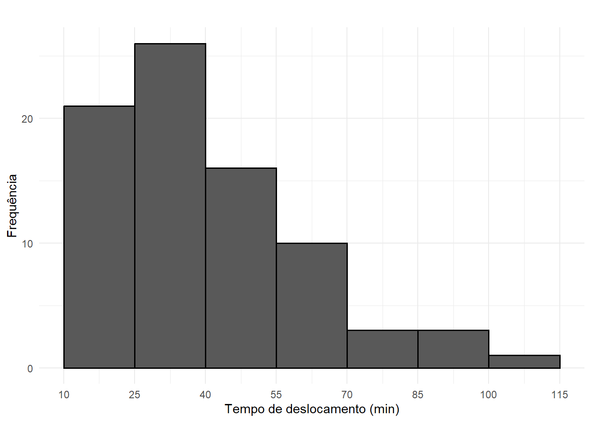
A Figura 4.4 permite visualizar como os tempos de deslocamento se distribuem entre as classes. Observa-se maior concentração de estudantes nas classes de menores tempos de deslocamento, enquanto as frequências diminuem à medida que o tempo aumenta.
Diferentemente do gráfico de barras, o histograma representa uma variável quantitativa em uma escala contínua. As barras são adjacentes porque os intervalos também são contíguos.
Gráfico de barras × histograma
| Gráfico de barras | Histograma |
|---|---|
| categorias ou valores discretos | intervalos de uma variável quantitativa |
| barras geralmente separadas | retângulos adjacentes |
| ordem pode ser arbitrária em variáveis nominais | ordem numérica é obrigatória |
| largura da barra não representa uma amplitude de valores | largura representa um intervalo da escala |
Histograma não é apenas um gráfico de barras com barras encostadas
Os dois gráficos representam estruturas diferentes. No histograma, cada retângulo corresponde a um intervalo numérico da variável.
A área dos retângulos
Quando todas as classes possuem a mesma largura, comparar alturas é suficiente para comparar frequências. Se as classes tiverem larguras diferentes, a interpretação correta exige que a área de cada retângulo seja proporcional à frequência. Nesse caso, utiliza-se uma densidade de frequência na altura do retângulo. A densidade de frequência de uma classe pode ser definida como: \[d_i = \frac{f_i}{h_i}\] em que \(h_i\) é a largura da classe.
Assim: \[\text{área} = h_i \times d_i = f_i\] á
Essa observação será importante quando compararmos histogramas com curvas de densidade.
A Figura 4.5 apresenta o histograma adaptado do tempo de deslocamento, construído com classes de amplitudes diferentes.
No histograma adaptado do tempo de deslocamento, observa-se maior concentração de estudantes na classe [25, 40) minutos, que apresenta a maior densidade de frequência. As classes [10, 25) e [40, 55) também apresentam densidades relativamente elevadas. A partir de 55 minutos, as classes foram construídas com amplitude maior, de 30 minutos, e apresentam alturas menores. Nesse caso, a altura dos retângulos não deve ser interpretada diretamente como frequência: é a área de cada retângulo que representa a frequência da classe. Assim, uma classe mais larga pode conter um número considerável de observações e, ainda assim, apresentar uma altura menor.
Vale a pena destacar um exemplo concreto. Na classe
\[ [40,55), \]
temos (16) estudantes e amplitude (15), portanto:
\[ d_i=\frac{16}{15}\approx1{,}07. \]
Já na classe mais larga
\[ [55,85), \]
temos (13) estudantes, mas amplitude (30):
\[ d_i=\frac{13}{30}\approx0{,}43. \]
Portanto, embora 13 estudantes estejam entre 55 e 85 minutos, o retângulo é consideravelmente mais baixo porque essas observações estão distribuídas em um intervalo duas vezes mais largo.
No histograma com classes de amplitudes diferentes, não se deve comparar as frequências pela altura dos retângulos. A comparação correta é feita pelas áreas, pois a área de cada retângulo é proporcional à frequência da respectiva classe.
O efeito da escolha das classes
O mesmo conjunto de dados pode produzir histogramas visualmente diferentes conforme o número e a largura das classes.
- poucas classes podem esconder características relevantes;
- muitas classes podem produzir uma figura excessivamente irregular;
- uma escolha intermediária procura revelar estrutura sem destacar ruído desnecessário.
Por isso, a escolha das classes é uma decisão exploratória.
Polígono de frequências
O polígono de frequências é construído ligando pontos cujas coordenadas são:
- no eixo horizontal: pontos médios das classes;
- no eixo vertical: frequências das classes.
Assim, os pontos médios calculados na tabela passam a ter uma função gráfica direta.
Para as primeiras classes:
\[(17{,}5;21),\quad(32{,}5;26),\quad(47{,}5;16),\ldots\]
O polígono oferece uma leitura do formato geral da distribuição e pode facilitar comparações entre distribuições.

Ogiva
A ogiva representa frequências acumuladas. Uma forma comum é utilizar:
- no eixo horizontal: limites superiores das classes;
- no eixo vertical: \(F_i\), \(F_{r_i}\) ou percentual acumulado.
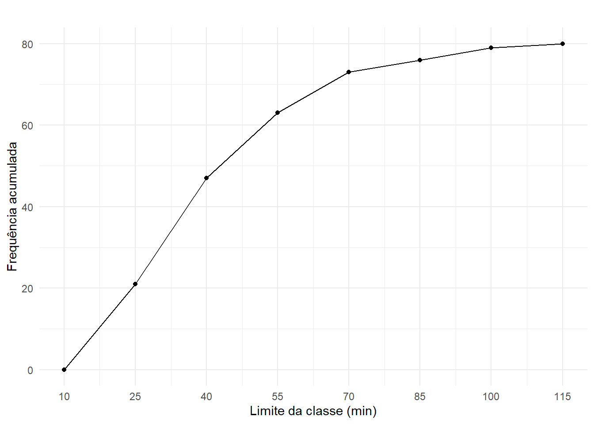
A partir da tabela anterior, o ponto associado ao limite 40 possui frequência acumulada 47. Portanto, a ogiva permite visualizar perguntas do tipo:
quantas observações estão abaixo de determinado valor?
Essa ideia será especialmente útil quando estudarmos medidas de posição.
Diagrama de ramo e folhas
O diagrama de ramo e folhas (stem-and-leaf plot) é uma representação utilizada para organizar dados quantitativos, permitindo visualizar a forma da distribuição sem perder completamente as observações individuais.
A ideia consiste em dividir cada valor em duas partes:
- o ramo, formado pelos algarismos iniciais;
- a folha, formada pelo algarismo final.
Diferentemente do histograma, no qual as observações são agrupadas em classes, o diagrama de ramo e folhas mantém visíveis os algarismos que compõem os valores observados.
Construção manual
Considere os seguintes tempos, em minutos:
\[ 12,\ 13,\ 14,\ 14,\ 15,\ 17,\ 18,\ 21,\ 22,\ 22,\ 25,\ 27,\ 31,\ 34,\ 36. \]
Como os valores são inteiros e estão compreendidos entre 12 e 36 minutos, uma escolha simples consiste em utilizar:
- a dezena como ramo;
- a unidade como folha.
Assim,
\[ 12 = 1\,|\,2, \]
isto é, o ramo é 1 e a folha é 2.
Da mesma forma,
\[ 25 = 2\,|\,5 \]
e
\[ 34 = 3\,|\,4. \]
Primeiro, identificamos os ramos necessários:
1 |
2 |
3 |Em seguida, percorremos os dados e colocamos cada folha no ramo correspondente:
1 | 2 3 4 4 5 7 8
2 | 1 2 2 5 7
3 | 1 4 6As folhas são apresentadas em ordem crescente dentro de cada ramo.
Chave de leitura
É importante informar como o diagrama deve ser interpretado.
Neste exemplo,
1 | 2representa
\[ 12\text{ minutos}. \]
Portanto, a chave do diagrama pode ser escrita como
\[ 1\,|\,2 = 12\text{ minutos}. \]
A linha
2 | 1 2 2 5 7representa, portanto, os valores
\[ 21,\ 22,\ 22,\ 25,\ 27. \]
Observe que as repetições também são preservadas. Como o valor 22 ocorreu duas vezes, aparecem duas folhas 2 no ramo 2.
O diagrama permite perceber simultaneamente os valores observados e algumas características da distribuição. Podemos identificar regiões de maior concentração, lacunas, dispersão, assimetria e possíveis valores muito afastados dos demais.
A escolha do ramo e da folha
A separação entre ramo e folha depende da magnitude e da precisão dos dados.
No exemplo anterior, foi conveniente utilizar as dezenas como ramos e as unidades como folhas. Em outros conjuntos de dados, pode ser necessário utilizar centenas, unidades ou até casas decimais como referência.
Por isso, todo diagrama de ramo e folhas deve apresentar uma chave de leitura.
O diagrama de ramo e folhas é particularmente útil para conjuntos de dados pequenos ou moderados. Para conjuntos muito grandes, o número de folhas pode tornar a representação extensa e de difícil leitura.
Exemplo: tempo de deslocamento dos 80 estudantes
Considere agora a variável tempo_deslocamento_min, que registra o tempo de deslocamento, em minutos, dos 80 estudantes.
Antes de utilizar uma representação gráfica, podemos organizar as observações em um rol:
[1] 11.7 12.9 13.4 14.0 14.3 15.0 15.3 15.4 17.1 17.6 17.9 20.0
[13] 20.1 21.6 21.9 22.0 22.3 24.1 24.4 24.6 24.7 25.5 26.3 26.7
[25] 27.5 27.5 27.9 28.3 29.6 29.8 31.1 31.4 31.6 32.0 32.0 33.2
[37] 34.2 34.3 34.3 35.7 36.3 37.7 38.1 38.1 38.6 38.6 38.8 40.7
[49] 40.9 44.5 45.1 45.5 46.6 46.8 46.8 49.9 51.0 51.3 51.6 51.7
[61] 52.0 52.5 52.8 56.5 56.8 58.2 61.1 63.3 66.7 66.8 68.5 68.6
[73] 68.9 72.7 76.3 77.8 85.9 96.5 99.2 112.0O rol preserva todos os valores e os apresenta em ordem crescente. Entretanto, com 80 observações, sua leitura já se torna menos imediata. O diagrama de ramo e folhas permite organizar esses valores de maneira mais compacta.
The decimal point is 1 digit(s) to the right of the |
1 | 23344555788
2 | 00222244556678888
3 | 0011222344466888999
4 | 11556777
5 | 01122233778
6 | 1377999
7 | 368
8 | 6
9 | 79
10 |
11 | 2Outro pacote que produz o ramos e folhas é o fmsb:

Curva de densidade
A curva de densidade estimada é uma representação suavizada da distribuição de uma variável quantitativa contínua. Em vez de dividir a escala em classes fixas, a densidade utiliza um procedimento de suavização para mostrar regiões de maior e menor concentração.
A densidade não deve ser interpretada como uma tabela de frequências: sua escala vertical não corresponde diretamente ao número de observações. A área total sob a curva é igual a 1.
A Figura 4.9 apresenta uma versão suavizada da distribuição dos tempos de deslocamento. Observa-se maior concentração de estudantes nos menores e intermediários tempos de deslocamento, com o pico da densidade localizado aproximadamente na região entre 25 e 40 minutos. À medida que o tempo aumenta, a densidade tende a diminuir, permanecendo uma cauda mais prolongada à direita, associada aos estudantes com tempos de deslocamento mais elevados.

Diferentemente do histograma de frequências, a altura da curva não representa diretamente o número de estudantes. A curva descreve a concentração relativa das observações ao longo dos valores da variável, e a área total sob a curva é igual a 1.
O papel da suavização
A aparência da curva depende da largura de banda (bandwidth):
- largura de banda muito pequena → curva excessivamente irregular;
- largura de banda muito grande → curva excessivamente suavizada;
- valores intermediários procuram revelar a estrutura principal.
Assim como a largura das classes influencia um histograma, a largura de banda influencia uma curva de densidade.
4.2.2 Laboratório no R
Utilizaremos exatamente a mesma variável tempo_deslocamento_min e reproduziremos a tabela construída manualmente.
Código
x <- dados$tempo_deslocamento_min
n <- sum(!is.na(x))
x_min <- min(x, na.rm = TRUE)
x_max <- max(x, na.rm = TRUE)
A <- x_max - x_min
c(
n = n,
minimo = x_min,
maximo = x_max,
amplitude = A
) n minimo maximo amplitude
80.0 11.7 112.0 100.3 Regras para número ou largura de classes
Código
k_raiz <- ceiling(sqrt(n))
k_raiz[1] 9Código
k_sturges <- ceiling(1 + log2(n))
k_sturges[1] 8Código
nclass.Sturges(x)[1] 8Código
h_scott <- 3.5 * sd(x, na.rm = TRUE) * n^(-1/3)
k_scott <- ceiling(A / h_scott)
c(
largura_scott = h_scott,
numero_classes = k_scott
) largura_scott numero_classes
17.52042 6.00000 Código
nclass.scott(x)[1] 6Código
h_fd <- 2 * IQR(x, na.rm = TRUE) * n^(-1/3)
k_fd <- ceiling(A / h_fd)
c(
largura_fd = h_fd,
numero_classes = k_fd
) largura_fd numero_classes
12.57871 8.00000 Código
nclass.FD(x)[1] 8Compare as propostas:
Código
tibble(
regra = c(
"Raiz quadrada",
"Sturges",
"Scott",
"Freedman-Diaconis"
),
numero_classes = c(
k_raiz,
k_sturges,
k_scott,
k_fd
)
)# A tibble: 4 × 2
regra numero_classes
<chr> <dbl>
1 Raiz quadrada 9
2 Sturges 8
3 Scott 6
4 Freedman-Diaconis 8Reproduzindo exatamente a tabela manual
Na construção teórica adotamos limites de 10 a 115 minutos, com amplitude de 15 minutos:
Código
limites <- seq(
from = 10,
to = 115,
by = 15
)
limites[1] 10 25 40 55 70 85 100 115Criamos a estrutura das classes:
Código
estrutura_classes <- tibble(
limite_inferior = head(limites, -1),
limite_superior = tail(limites, -1)
) |>
mutate(
ponto_medio =
(limite_inferior + limite_superior) / 2
)
estrutura_classes# A tibble: 7 × 3
limite_inferior limite_superior ponto_medio
<dbl> <dbl> <dbl>
1 10 25 17.5
2 25 40 32.5
3 40 55 47.5
4 55 70 62.5
5 70 85 77.5
6 85 100 92.5
7 100 115 108. Classificamos cada observação:
Código
classe <- cut(
x,
breaks = limites,
right = FALSE,
include.lowest = TRUE
)
table(classe)classe
[10,25) [25,40) [40,55) [55,70) [70,85) [85,100) [100,115]
21 26 16 10 3 3 1 O argumento right = FALSE produz intervalos fechados à esquerda e abertos à direita, como \([10;25)\).
Agora calculamos as frequências:
Código
fi <- as.integer(
table(classe)
)
tabela_classes <- estrutura_classes |>
mutate(
fi = fi,
fr = fi / sum(fi),
percentual = 100 * fr,
Fi = cumsum(fi),
Fr = cumsum(fr)
)
tabela_classes# A tibble: 7 × 8
limite_inferior limite_superior ponto_medio fi fr percentual Fi
<dbl> <dbl> <dbl> <int> <dbl> <dbl> <int>
1 10 25 17.5 21 0.262 26.2 21
2 25 40 32.5 26 0.325 32.5 47
3 40 55 47.5 16 0.2 20 63
4 55 70 62.5 10 0.125 12.5 73
5 70 85 77.5 3 0.0375 3.75 76
6 85 100 92.5 3 0.0375 3.75 79
7 100 115 108. 1 0.0125 1.25 80
# ℹ 1 more variable: Fr <dbl>Para apresentação:
Código
tabela_classes_apresentacao <- tabela_classes |>
mutate(
intervalo = paste0(
"[",
limite_inferior,
"; ",
limite_superior,
")"
),
fr = round(fr, 4),
`Percentual (%)` = round(percentual, 2),
`Fr acumulada` = round(Fr, 4)
) |>
select(
intervalo,
ponto_medio,
fi,
fr,
`Percentual (%)`,
Fi,
`Fr acumulada`
)
knitr::kable(
tabela_classes_apresentacao,
col.names = c(
"Classe",
"Ponto médio",
"fi",
"fr",
"Percentual (%)",
"Fi",
"Fr"
)
)| Classe | Ponto médio | fi | fr | Percentual (%) | Fi | Fr |
|---|---|---|---|---|---|---|
| [10; 25) | 17.5 | 21 | 0.2625 | 26.25 | 21 | 0.2625 |
| [25; 40) | 32.5 | 26 | 0.3250 | 32.50 | 47 | 0.5875 |
| [40; 55) | 47.5 | 16 | 0.2000 | 20.00 | 63 | 0.7875 |
| [55; 70) | 62.5 | 10 | 0.1250 | 12.50 | 73 | 0.9125 |
| [70; 85) | 77.5 | 3 | 0.0375 | 3.75 | 76 | 0.9500 |
| [85; 100) | 92.5 | 3 | 0.0375 | 3.75 | 79 | 0.9875 |
| [100; 115) | 107.5 | 1 | 0.0125 | 1.25 | 80 | 1.0000 |
Verificações:
Código
sum(tabela_classes$fi)[1] 80Código
sum(tabela_classes$fr)[1] 1Código
tail(tabela_classes$Fi, 1)[1] 80Código
tail(tabela_classes$Fr, 1)[1] 1Esperamos 80, 1, 80 e 1, respectivamente.
Histograma com as mesmas classes da tabela
Para que o histograma corresponda à tabela manual, usamos largura 15 e fronteira 10:
Código
dados |>
ggplot(
aes(x = tempo_deslocamento_min)
) +
geom_histogram(
binwidth = 15,
boundary = 10,
closed = "left",
color = "black",
linewidth = 0.6
)+
scale_x_continuous(
breaks = seq(
from = 10,
to = 115,
by = 15
)
) +
labs(
title = "Histograma do tempo de deslocamento",
x = "Tempo de deslocamento (min)",
y = "Frequência"
) +
theme_minimal()Agora tabela e histograma utilizam a mesma organização da escala.
Podemos comparar outras escolhas:
Código
dados |>
ggplot(
aes(x = tempo_deslocamento_min)
) +
geom_histogram(
bins = k_sturges
) +
labs(
title = "Histograma pela regra de Sturges",
x = "Tempo de deslocamento (min)",
y = "Frequência"
) +
theme_minimal()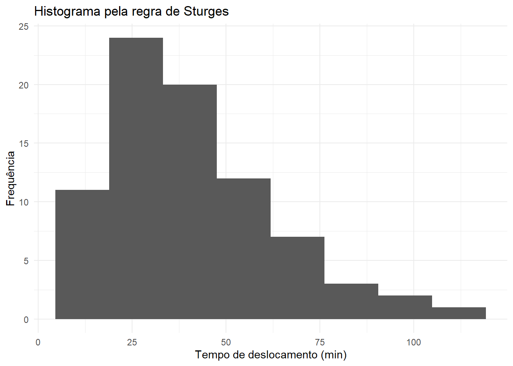
Código
dados |>
ggplot(
aes(x = tempo_deslocamento_min)
) +
geom_histogram(
binwidth = h_fd
) +
labs(
title = "Histograma com largura de Freedman--Diaconis",
x = "Tempo de deslocamento (min)",
y = "Frequência"
) +
theme_minimal()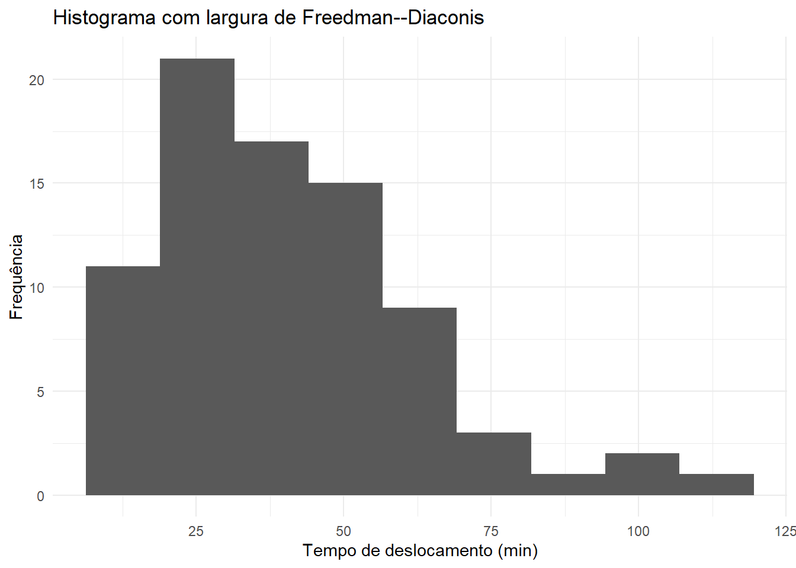
Suponha que as duas últimas classes tenha amplitude igual a 30, enquanto as três primeiras é igual a 15.
Código
limites_adaptados <- c(
10, 25, 40, 55, 85, 115
)
dados |>
ggplot(
aes(
x = tempo_deslocamento_min,
y = after_stat(count / width)
)
) +
geom_histogram(
breaks = limites_adaptados,
closed = "left",
color = "white",
linewidth = 0.8
) +
scale_x_continuous(
breaks = limites_adaptados
) +
labs(
x = "Tempo de deslocamento (min)",
y = "Densidade de frequência"
) +
theme_minimal()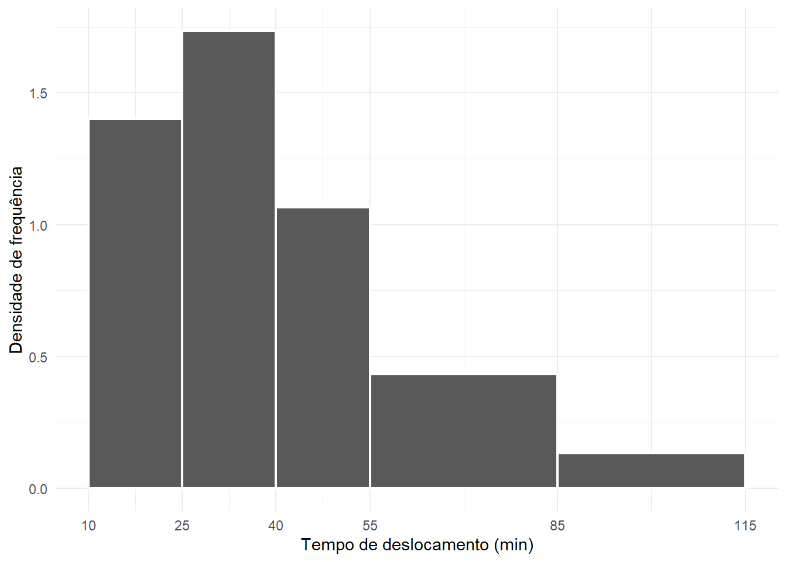
Não escolha mecanicamente o gráfico “mais bonito”. Compare as representações e observe quais características permanecem estáveis diante de pequenas mudanças nas classes.
Polígono de frequências
O polígono utiliza diretamente os pontos médios e as frequências da tabela:
Código
tabela_poligono <- tabela_classes |>
select(ponto_medio, fi) |>
bind_rows(
tibble(ponto_medio = 10, fi = 0),
tibble(ponto_medio = 115, fi = 0)
) |>
arrange(ponto_medio)Código
tabela_poligono |>
ggplot(
aes(x = ponto_medio, y = fi)
) +
geom_line() +
geom_point() +
scale_x_continuous(
breaks = c(
10,
tabela_classes$ponto_medio,
115
)
)+
labs(
title = "",
x = "Tempo de deslocamento (minutos)",
y = "Frequência"
) +
theme_minimal()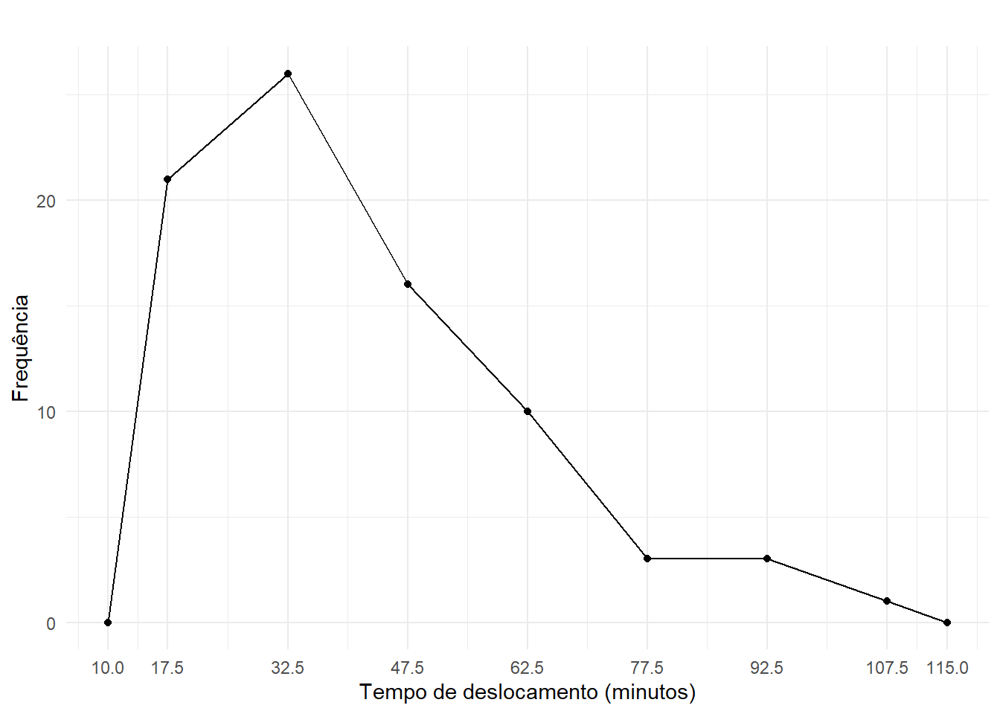
Para fechar o polígono de frequências, acrescentamos dois pontos auxiliares com frequência zero: um no limite inferior da primeira classe e outro no limite superior da última classe. Esses pontos não representam novas classes; servem apenas para completar a representação gráfica.
Como ficaria o polígono de frequências diretamente dos dados:
Código
ggplot(
dados,
aes(x = tempo_deslocamento_min)
) +
geom_freqpoly(
binwidth = 15,
boundary = 10
) +
labs(
title = "Polígono de frequências",
x = "Tempo de deslocamento (min)",
y = "Frequência"
) +
theme_minimal()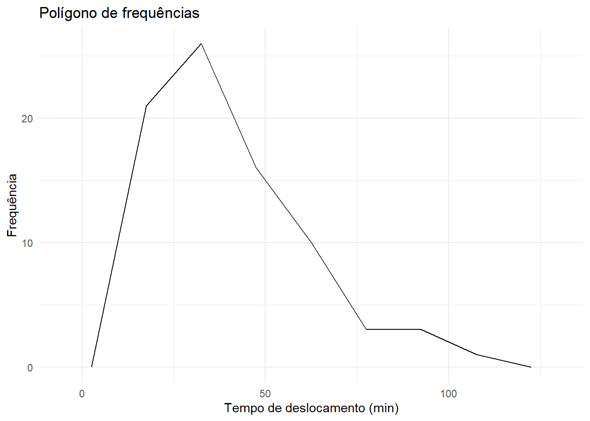
Ogiva
Primeiro associamos a cada classe seu limite superior e a frequência acumulada:
Código
tabela_ogiva <- tabela_classes |>
transmute(
limite_superior,
Fi,
percentual_acumulado = 100 * Fr
) |>
bind_rows(
tibble(
limite_superior = 10,
Fi = 0,
percentual_acumulado = 0
)
) |>
arrange(limite_superior)
tabela_ogiva# A tibble: 8 × 3
limite_superior Fi percentual_acumulado
<dbl> <dbl> <dbl>
1 10 0 0
2 25 21 26.2
3 40 47 58.8
4 55 63 78.8
5 70 73 91.3
6 85 76 95
7 100 79 98.8
8 115 80 100 Ogiva em frequência absoluta:
Código
tabela_ogiva |>
ggplot(
aes(
x = limite_superior,
y = Fi
)
) +
geom_line() +
geom_point() +
scale_x_continuous(
breaks = seq(10, 115, by = 15)
) +
labs(
title = "Ogiva do tempo de deslocamento",
x = "Limite da classe (min)",
y = "Frequência acumulada"
) +
theme_minimal()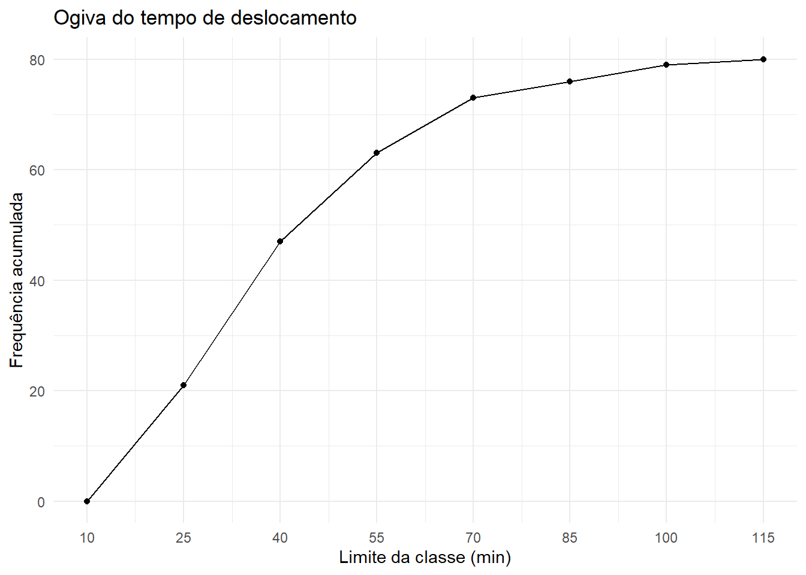
Em percentual acumulado:
Código
tabela_ogiva |>
ggplot(
aes(
x = limite_superior,
y = percentual_acumulado
)
) +
geom_line() +
geom_point() +
scale_x_continuous(
breaks = seq(10, 115, by = 15)
) +
scale_y_continuous(
breaks = seq(0, 100, by = 20)
) +
labs(
title = "Ogiva percentual do tempo de deslocamento",
x = "Limite da classe (min)",
y = "Percentual acumulado (%)"
) +
theme_minimal()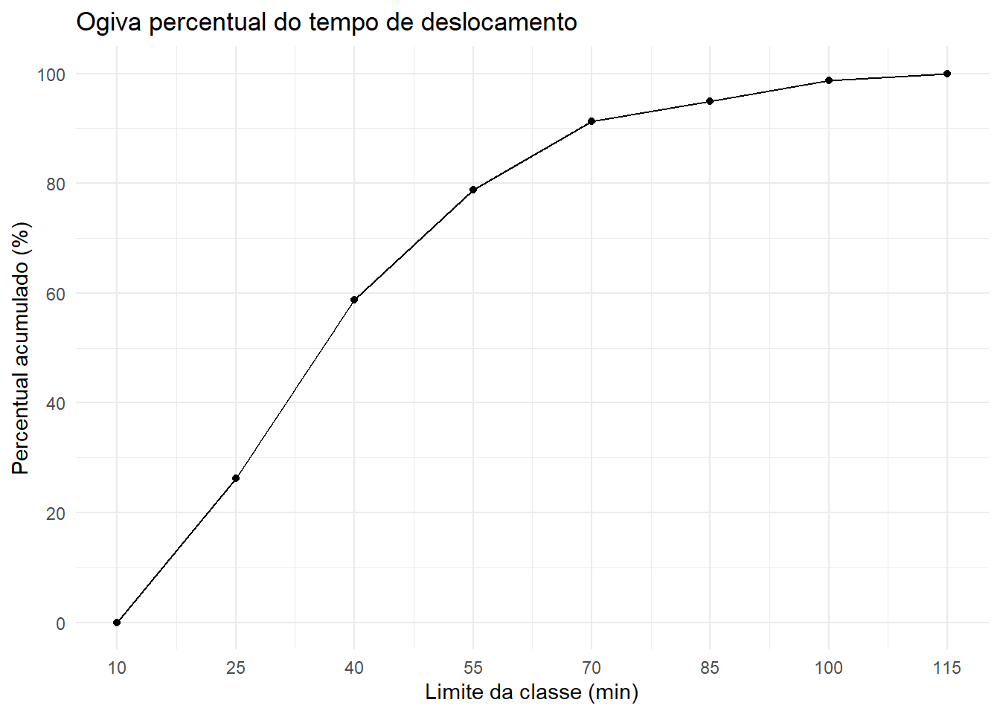
Função de distribuição empírica: uma observação útil
A função de distribuição empírica utiliza diretamente os valores observados, sem agrupá-los em classes:
Código
dados |>
ggplot(
aes(x = tempo_deslocamento_min)
) +
stat_ecdf() +
labs(
title = "Função de distribuição empírica",
x = "Tempo de deslocamento (min)",
y = "Proporção acumulada"
) +
theme_minimal()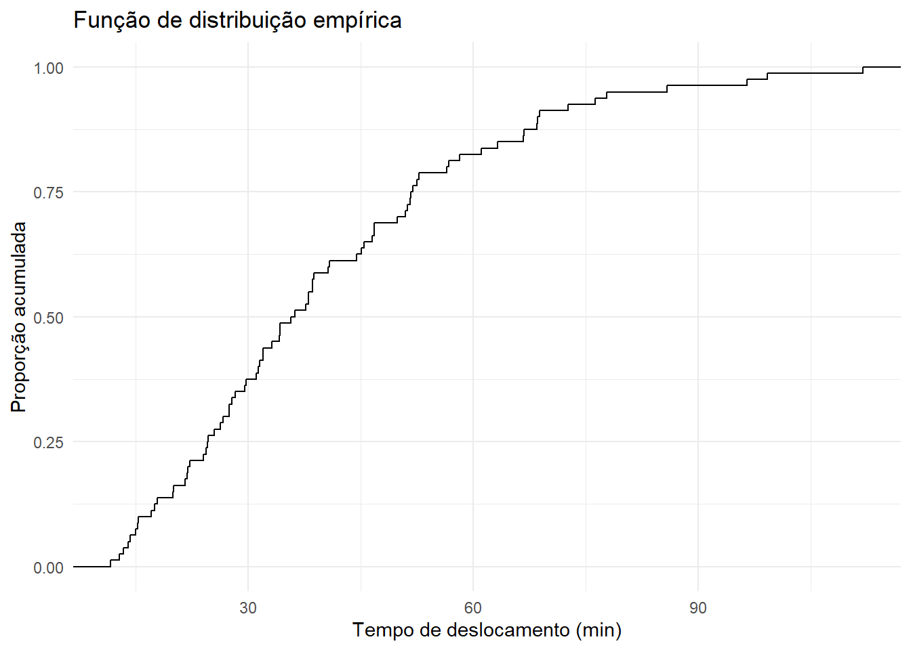
A ECDF e a ogiva têm em comum a ideia de acumulação, mas a ogiva apresentada anteriormente depende das classes escolhidas; a ECDF utiliza cada valor observado.
Diagrama de ramo e folhas
No R, o diagrama de ramo e folhas pode ser obtido pela função stem():
Código
stem(
dados$tempo_deslocamento_min
)
The decimal point is 1 digit(s) to the right of the |
0 | 23344555788
2 | 002222445566788880011222344466888999
4 | 1155677701122233778
6 | 1377999368
8 | 679
10 | 2A função possui a forma básica
stem(
x,
scale = 1
)em que x é o vetor numérico e scale controla o comprimento da representação.
Por padrão,
scale = 1e, portanto, o comando
stem(dados$tempo_deslocamento_min)é equivalente a
stem(
dados$tempo_deslocamento_min,
scale = 1
)Para os tempos de deslocamento, obtemos:
The decimal point is 1 digit(s) to the right of the |
0 | 23344555788
2 | 002222445566788880011222344466888999
4 | 1155677701122233778
6 | 1377999368
8 | 679
10 | 2A primeira linha da saída,
The decimal point is 1 digit(s) to the right of the |informa a posição da casa decimal e deve ser observada antes da interpretação do diagrama.
O que aconteceu com scale = 1?
Observe que os ramos apresentados pelo R são
\[ 0,\quad 2,\quad 4,\quad 6,\quad 8,\quad 10. \]
Isso é diferente da construção manual anterior, na qual utilizamos um ramo para cada dezena.
Para este conjunto de dados, com scale = 1, o R produziu uma representação mais compacta: os ramos ímpares são incorporados às linhas dos ramos pares imediatamente anteriores.
Assim, podemos interpretar a organização das linhas aproximadamente como:
| Ramo exibido | Valores reunidos |
|---|---|
0 |
0 a 19 minutos |
2 |
20 a 39 minutos |
4 |
40 a 59 minutos |
6 |
60 a 79 minutos |
8 |
80 a 99 minutos |
10 |
100 a 119 minutos |
Portanto, o ramo 0 não significa que existam tempos de deslocamento próximos de zero. Nesta representação, a mesma linha também incorpora os valores da faixa dos 10 minutos.
Por isso, a primeira linha
0 | 23344555788contém os menores tempos observados, que, após a aproximação utilizada pela função, correspondem a valores próximos de
\[ 12,\ 13,\ 13,\ 14,\ 14,\ 15,\ 15,\ 15,\ 17,\ 18,\ 18. \]
Não leia apenas ramo + folha
Na construção manual que fizemos anteriormente,
1 | 2significava diretamente 12 minutos.
Na saída automática do stem(), essa regra só pode ser utilizada depois de compreendermos a escala adotada pelo R.
Quando scale = 1 produz uma representação compactada, uma mesma linha pode incorporar duas dezenas consecutivas. Por isso, a informação fornecida pelo programa sobre a posição decimal e a estrutura dos ramos deve ser examinada antes da leitura das folhas.
Esse comportamento também pode ser percebido na linha iniciada pelo ramo 2, que reúne valores dos 20 e dos 30 minutos.
A compactação tem uma vantagem: os 80 valores podem ser apresentados em poucas linhas. A desvantagem é que a leitura deixa de ser tão imediata quanto no diagrama construído manualmente.
Alterando scale
Podemos solicitar ao R uma representação mais detalhada aumentando scale:
Código
stem(
dados$tempo_deslocamento_min,
scale = 2
)
The decimal point is 1 digit(s) to the right of the |
1 | 23344555788
2 | 00222244556678888
3 | 0011222344466888999
4 | 11556777
5 | 01122233778
6 | 1377999
7 | 368
8 | 6
9 | 79
10 |
11 | 2O argumento scale não modifica os dados. Ele modifica somente o grau de detalhamento vertical do diagrama.
Com
scale = 2o R procura produzir uma representação aproximadamente duas vezes mais longa que a obtida com scale = 1.
Isso geralmente reduz a quantidade de observações reunidas em uma mesma linha e facilita a identificação da estrutura da distribuição.
Como escolher
scale?
Não existe um único valor de scale que seja necessariamente o melhor para todos os conjuntos de dados.
Uma estratégia prática é:
- começar com
scale = 1; - observar se existem muitas folhas concentradas em poucas linhas;
- aumentar para
scale = 2quando a representação estiver excessivamente compacta; - experimentar valores maiores se ainda for necessário aumentar o detalhamento.
A escolha deve favorecer a leitura da distribuição, sem produzir um diagrama excessivamente longo ou fragmentado.
Para fins didáticos, é interessante comparar pelo menos
stem(
dados$tempo_deslocamento_min,
scale = 1
)com
stem(
dados$tempo_deslocamento_min,
scale = 2
)e observar como os mesmos dados são distribuídos entre um número diferente de linhas.
Atenção à precisão dos dados
A variável tempo_deslocamento_min possui valores com casas decimais.
Para construir o diagrama, stem() utiliza uma precisão compatível com a escala escolhida e pode não exibir todos os algarismos presentes nos dados originais.
Assim, o diagrama de ramo e folhas preserva mais informação individual que uma distribuição agrupada em classes, mas não significa necessariamente que todas as casas decimais originais serão reproduzidas.
Ao analisar o diagrama, devemos observar onde se encontra a maior concentração de folhas, como elas se distribuem ao longo dos ramos, se existem regiões sem observações e se alguns valores aparecem muito afastados da região de maior concentração.
O diagrama de ramo e folhas permite, portanto, observar a forma da distribuição e, simultaneamente, manter uma ligação mais próxima com os valores individuais. :::
O pacote fmsb também produz o diagrama de ramos e folhas e insere em um ambiente gráfico:
Código
library(fmsb)
fmsb::gstem(
dados$tempo_deslocamento_min
)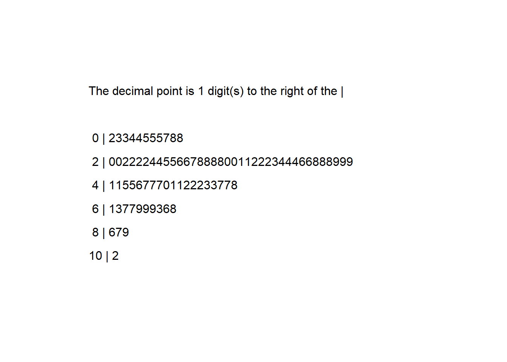
Curva de densidade
Código
dados |>
ggplot(
aes(x = tempo_deslocamento_min)
) +
geom_density() +
labs(
title = "Curva de densidade do tempo de deslocamento",
x = "Tempo de deslocamento (min)",
y = "Densidade"
) +
theme_minimal()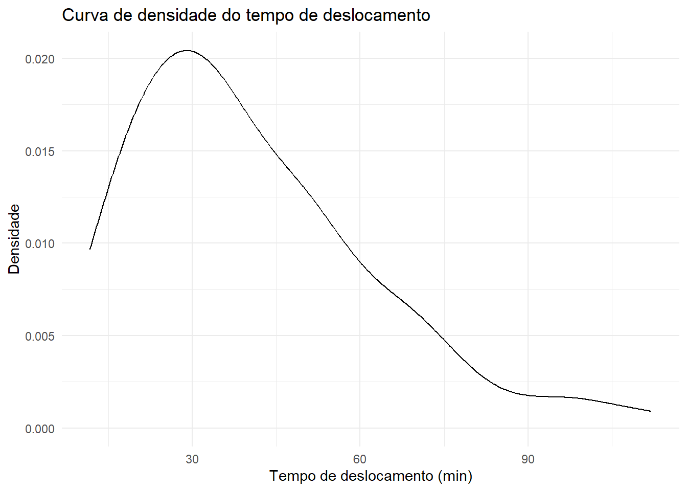
Histograma e densidade podem ser comparados na mesma escala:
Código
dados |>
ggplot(
aes(x = tempo_deslocamento_min)
) +
geom_histogram(
aes(y = after_stat(density)),
binwidth = 15,
boundary = 10,
closed = "left"
) +
geom_density() +
labs(
title = "Histograma e curva de densidade",
x = "Tempo de deslocamento (min)",
y = "Densidade"
) +
theme_minimal()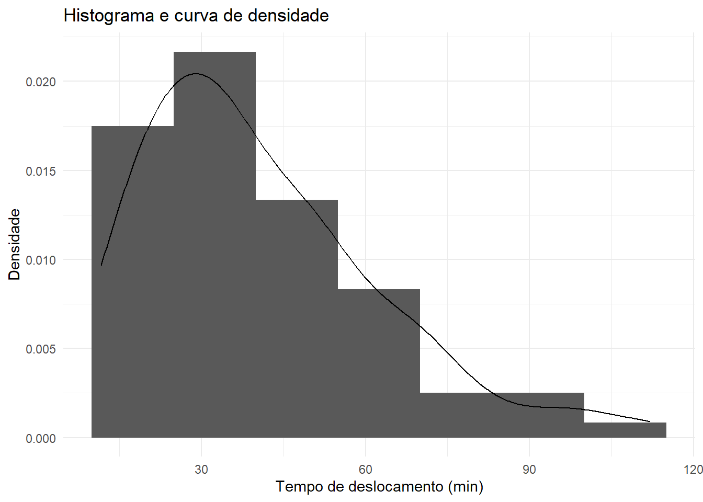
Compare diferentes larguras de banda:
Código
dados |>
ggplot(
aes(x = tempo_deslocamento_min)
) +
geom_density(adjust = 0.5) +
labs(
title = "Menos suavização",
x = "Tempo de deslocamento (min)",
y = "Densidade"
) +
theme_minimal()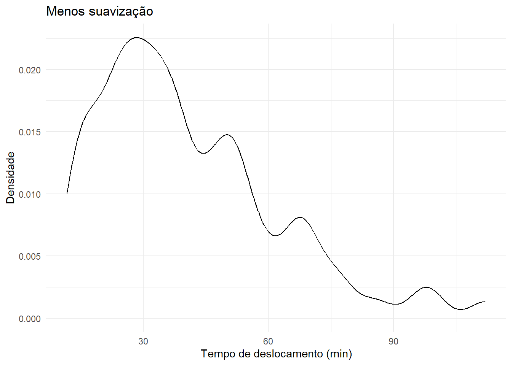
Código
dados |>
ggplot(
aes(x = tempo_deslocamento_min)
) +
geom_density(adjust = 2) +
labs(
title = "Mais suavização",
x = "Tempo de deslocamento (min)",
y = "Densidade"
) +
theme_minimal()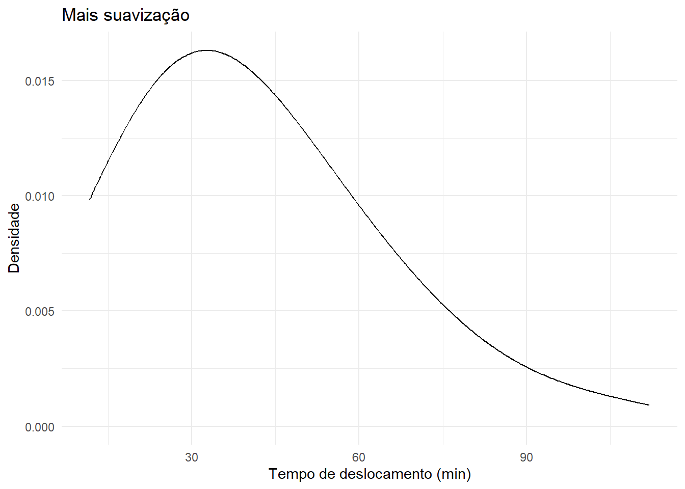
A forma da densidade não é independente da escolha de suavização. Assim como no histograma, vale a pena verificar se a interpretação geral é robusta a escolhas razoáveis.
4.3 Escolhendo uma representação adequada
Uma representação estatística deve ser escolhida em função da natureza da variável e do objetivo da análise.
| Tipo de variável | Tabela/organização | Representações frequentes |
|---|---|---|
| Qualitativa nominal | categorias e frequências | barras, Pareto, setores |
| Qualitativa ordinal | categorias em ordem natural e frequências | barras ordenadas |
| Quantitativa discreta | valores distintos e frequências | barras, pontos |
| Quantitativa contínua | valores individuais ou classes | histograma, polígono, ogiva, ramo e folhas, densidade |
Esse quadro é uma orientação inicial, não uma regra absoluta.
Ao interpretar um gráfico, pergunte:
- qual variável está sendo representada?
- qual é sua unidade de medida?
- o que aparece em cada eixo?
- as frequências são absolutas, relativas, percentuais ou acumuladas?
- onde os dados estão mais concentrados?
- existem regiões pouco ocupadas ou lacunas?
- há observações que merecem investigação?
- a escolha gráfica facilita ou dificulta a leitura?
Construir é apenas parte da análise
O objetivo não é produzir gráficos por produzir. Uma representação gráfica deve ajudar a formular ou responder perguntas sobre os dados.
4.3.1 Erros comuns em tabelas e gráficos
Evite:
- utilizar frequência acumulada para categorias sem ordem;
- esconder qual denominador foi utilizado nos percentuais;
- ordenar uma variável ordinal pela frequência e destruir sua ordem natural;
- utilizar códigos de categoria sem explicar seus significados;
- confundir gráfico de barras com histograma;
- utilizar classes que não cobrem todos os valores ou que se sobrepõem;
- escolher número de classes mecanicamente sem observar o efeito no histograma;
- omitir títulos, unidades ou rótulos essenciais;
- utilizar efeitos tridimensionais que não acrescentam informação;
- interpretar uma curva de densidade como se o eixo vertical fosse uma contagem;
- apresentar muitas casas decimais sem necessidade;
- repetir em texto todos os valores já visíveis na tabela.
4.4 Exercícios de consolidação
4.4.1 Exercícios conceituais
Exercício 1 — Número de livros lidos
O número de livros lidos por 24 estudantes no último semestre foi:
\[0,\ 1,\ 2,\ 1,\ 3,\ 2,\ 0,\ 4,\ 1,\ 2,\ 2,\ 3,\]
\[1,\ 0,\ 2,\ 5,\ 1,\ 3,\ 2,\ 1,\ 4,\ 2,\ 0,\ 3.\]
- Classifique a variável.
- Construa o rol.
- Construa a distribuição de frequências absoluta, relativa e percentual.
- Acrescente frequências acumuladas.
- Qual percentual leu exatamente dois livros?
- Qual percentual leu no máximo dois livros?
- Qual percentual leu pelo menos três livros?
- Qual representação gráfica você escolheria? Justifique.
Exercício 2 — Variável nominal
Uma pesquisa registrou o tipo de conexão à internet utilizado por 50 estudantes:
| Conexão | Frequência |
|---|---|
| Fibra | 28 |
| Dados móveis | 11 |
| Cabo | 7 |
| Rádio | 3 |
| Outra | 1 |
- Calcule frequências relativas e percentuais.
- Frequências acumuladas possuem interpretação natural? Explique.
- Construa a ordenação necessária para um gráfico de Pareto.
- Qual gráfico seria mais eficiente para comparar as categorias: barras ou setores? Justifique.
Exercício 3 — Variável ordinal e valores ausentes
Uma pesquisa obteve 100 participantes. Para a variável satisfação, oito pessoas não responderam. Entre as 92 respostas válidas:
- 15 foram
Baixa; - 27 foram
Média; - 50 foram
Alta.
Calcule:
- os percentuais entre as 92 respostas válidas;
- os percentuais entre os 100 participantes;
- o percentual de ausência;
- explique por que os dois denominadores respondem a perguntas diferentes;
- construa as frequências acumuladas entre as respostas válidas.
Exercício 4 — Construção de uma tabela por classes
Considere uma variável quantitativa contínua com:
\[n=60,\qquad x_{\min}=12{,}4,\qquad x_{\max}=48{,}9.\]
- Calcule a amplitude total.
- Obtenha um número inicial de classes pela regra da raiz quadrada.
- Obtenha o número sugerido por Sturges.
- Escolha uma proposta de \(k\) e calcule uma largura inicial \(h=A/k\).
- Ajuste os limites para valores de leitura conveniente.
- Explique quais critérios deve verificar para garantir que as classes formem uma partição adequada.
Exercício 5 — Identificando erros
Um relatório apresenta as classes:
\[[0;10],\quad[10;20],\quad[20;30].\]
- Explique por que essa notação pode gerar ambiguidade para os valores
10e20. - Reescreva as classes utilizando uma convenção sem sobreposição.
- Por que lacunas entre classes também seriam problemáticas?
Exercício 6 — Leitura da tabela contínua
Utilize a tabela de tempo de deslocamento deste capítulo.
- Quantos estudantes levam entre 40 e menos de 55 minutos?
- Qual percentual leva menos de 55 minutos?
- Quantos levam pelo menos 70 minutos?
- Qual é a classe modal?
- Qual ponto médio representa a classe \([55;70)\)?
- Explique a diferença entre \(f_i\) e \(F_i\) para a classe \([40;55)\).
Exercício 7 — Escolha crítica do gráfico
Para cada situação, indique uma representação adequada e justifique:
- curso de graduação;
- nível de satisfação em cinco categorias ordenadas;
- número de irmãos;
- altura de 200 estudantes;
- distribuição acumulada do tempo de deslocamento;
- conjunto de 25 valores quantitativos quando se deseja preservar os valores individuais.
4.4.2 Exercícios no R
Exercício 8 — Tabela e barras
Utilize curso no banco do capítulo.
- construa a tabela de frequências;
- calcule percentuais;
- produza gráfico de barras;
- ordene as barras por frequência;
- escreva duas frases interpretativas.
Exercício 9 — Ordinal
Utilize satisfacao.
- confirme os níveis do fator;
- construa \(f_i\), \(f_{r_i}\), percentual, \(F_i\) e \(F_{r_i}\);
- construa gráfico de barras preservando a ordem;
- explique por que ordenar pela frequência seria inadequado.
Exercício 10 — Quantitativa discreta
Utilize faltas.
- construa a tabela completa;
- determine quantos estudantes tiveram exatamente duas faltas;
- determine quantos tiveram no máximo duas;
- determine quantos tiveram pelo menos três;
- construa um gráfico de barras e um gráfico de pontos;
- compare a informação visual oferecida pelos dois.
Exercício 11 — Regras de classes
Utilize altura_m.
- calcule \(n\), mínimo, máximo e amplitude;
- obtenha as sugestões de Sturges, Scott e Freedman–Diaconis;
- compare os resultados;
- escolha uma configuração e justifique-a.
Exercício 12 — Tabela contínua completa
Utilize altura_m.
- defina limites adequados;
- utilize
cut()para criar as classes; - construa a tabela com ponto médio, \(f_i\), \(f_{r_i}\), percentual, \(F_i\) e \(F_{r_i}\);
- faça todas as verificações de consistência;
- produza um histograma com os mesmos limites da tabela.
Exercício 13 — Ogiva e densidade
Utilize tempo_deslocamento_min.
- construa uma ogiva em percentual acumulado;
- construa a função de distribuição empírica;
- explique a principal diferença entre as duas;
- construa uma curva de densidade;
- compare
adjust = 0.5,adjust = 1eadjust = 2.
Exercício 14 — Mini-relatório exploratório
Escolha uma variável do banco e produza, em Quarto, uma análise contendo:
- identificação e classificação da variável;
- número de observações válidas;
- tabela de frequências adequada;
- representação gráfica coerente;
- pelo menos três frases de interpretação;
- uma observação sobre alguma decisão tomada durante a análise.
Síntese do capítulo
Uma distribuição de frequências transforma observações individuais em uma visão estruturada da variável. Para categorias e valores discretos, a tabela apresenta diretamente cada valor e sua frequência. Para dados contínuos, muitas vezes é necessário agrupar observações em classes.
As representações gráficas devem surgir como extensão dessa organização: barras comparam categorias ou valores discretos; histogramas representam intervalos contínuos; polígonos utilizam pontos médios; ogivas utilizam frequências acumuladas; ramo e folhas preserva valores individuais; curvas de densidade oferecem uma visão suavizada da distribuição.
O R automatiza esses procedimentos, mas não substitui as decisões estatísticas sobre classificação da variável, denominadores, ordem, classes, representação e interpretação.
Referências de apoio
BUSSAB, Wilton de Oliveira; MORETTIN, Pedro Alberto. Estatística básica. 8. ed. São Paulo: Saraiva, 2013.
CLEVELAND, William S. The elements of graphing data. Monterey: Wadsworth, 1985.
DALGAARD, Peter. Introductory statistics with R. 2. ed. New York: Springer, 2008.
FREEDMAN, David; DIACONIS, Persi. On the histogram as a density estimator: \(L_2\) theory. Zeitschrift für Wahrscheinlichkeitstheorie und Verwandte Gebiete, v. 57, p. 453–476, 1981.
HOAGLIN, David C.; MOSTELLER, Frederick; TUKEY, John W. Understanding robust and exploratory data analysis. New York: John Wiley & Sons, 1983.
SCOTT, David W. On optimal and data-based histograms. Biometrika, v. 66, n. 3, p. 605–610, 1979.
STURGES, Herbert A. The choice of a class interval. Journal of the American Statistical Association, v. 21, n. 153, p. 65–66, 1926.
TUKEY, John W. Exploratory Data Analysis. Reading, Massachusetts: Addison-Wesley, 1977.
WICKHAM, Hadley. ggplot2: Elegant Graphics for Data Analysis. 2. ed. Cham: Springer, 2016.
WITTE, Robert S.; WITTE, John S. Statistics. Hoboken: Wiley, 2013.